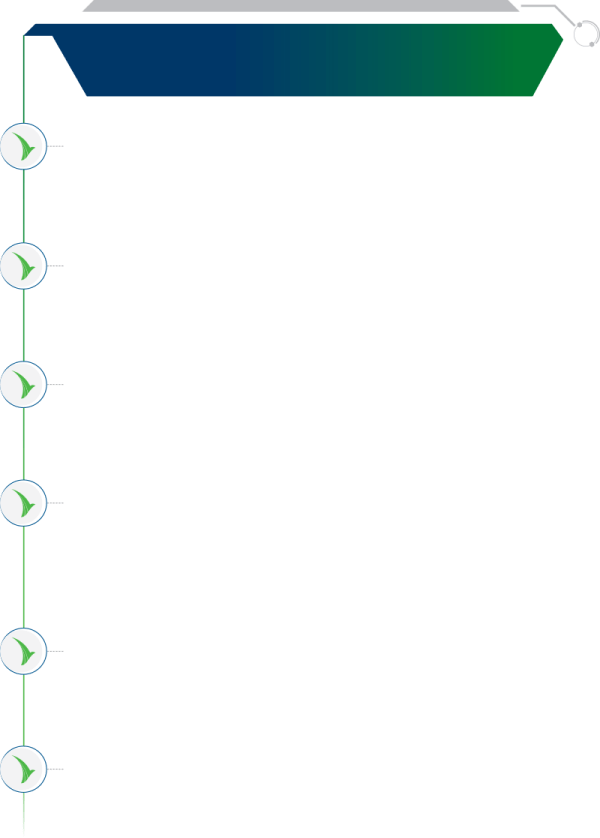
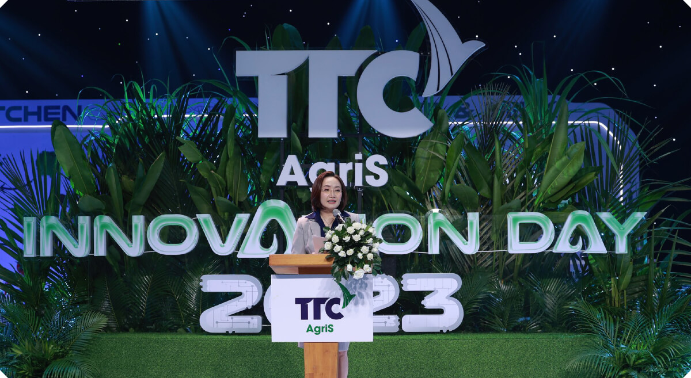
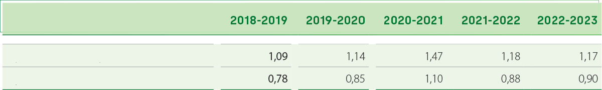

Niên độ 2022-2023 chứng kiến sự tăng trưởng mạnh của giá Đường thế giới, cụ thể giá đường đã tăng phi mã và đạt mức cao nhất thập kỷ khi tạo đỉnh ở mức hơn 27 cent/lb vào tháng 4/2023.
Một số yếu tố hỗ trợ giá Đường có thể kể đến như:
Việc hạn chế xuất khẩu của các quốc gia xuất khẩu lớn để thực hiện các chính sách an ninh năng lượng, cũng như chủ nghĩa bảo hộ lương thực toàn cầu trỗi dậy mạnh mẽ tại nhiều quốc gia trên thế giới. Điển hình nhất là cường quốc Mía đường thế giới Ấn Độ cấm xuất khẩu đường từ tháng 10/2023 đã khiến nguồn cung trên thế giới suy giảm đáng kể, từ đó đẩy thị trường vào một cú sốc cung mới. Bên cạnh đó, Pakistan từ một quốc gia hàng năm có thể xuất khẩu Đường trắng ra thị thường trên 400.000 tấn thì hiện nay cũng thực hiện chính sách cấm xuất khẩu nhằm đảm bảo bình ổn giá đường trong nước;
Hiện tượng El Nino xảy ra khắp các Châu lục đã gây ra tình trạng khô hạn và lũ lụt ở nhiều nơi, dẫn đến sản lượng mía thu hoạch ngày càng giảm, nguồn cung bị hạn chế. Cụ thể, Thái Lan dự kiến giảm hơn 2,5 triệu tấn Đường, Ấn Độ cũng được dự báo bước đầu giảm 1,3 triệu tấn Đường;
Giá dầu thô tăng cao đang hỗ trợ nhất định cho giá Đường trên thị trường thế giới trong bối cảnh các quốc gia chuyển diện tích trồng mía sang sản xuất ethanol nhiên liệu thay vì sản xuất Đường;
>Sự bất ổn về địa chính trị xảy ra khắp lục địa Châu Phi cộng thêm căng thẳng chính trị (xung đột Nga - Ukraine và các nước đồng minh) chưa có hồi kết đã làm đứt gãy an ninh lương thực toàn cầu. Nhiều quốc gia trên thế giới dù sản lượng sản xuất vượt mức nhu cầu tiêu dùng trong nước nhưng các quốc gia này vẫn cấm xuất khẩu.
Tình hình của những quốc gia xuất khẩu Đường lớn
thế giới niên độ 2022-2023 và dự báo niên độ 2023-2024
BRAZIL
ẤN ĐỘ
chiếm hơn38%sản lượng xuất khẩu toàn cầu
chiếm16%sản lượng xuất khẩu toàn cầu
Sản lượng sản xuất của Trung Nam Brazil
giai đoạn 2016 - 2024DK (Đơn vị: triệu tấn)
Sản lượng sản xuất của ấn độ
giai đoạn 2016 - 2024DK (Đơn vị: triệu tấn)
Sản lượng niên độ 2023-2024 của Brazil dự kiến tăng mạnh, trở thành vị cứu tinh cho ngành Mía Đường toàn cầu
Niên độ 2022-2023
Lũy kế cả vụ thu hoạch, lượng mía đạt 548,3 triệu tấn và sản lượng Đường sản xuất là 36,2 triệu tấn.
Niên độ 2023-2024
Hiệp hội Công nghiệp Mía Đường Brazil (Unica) đã báo cáo rằng sản lượng Đường trong NĐ 2023-2024 tính đến tháng 8 đã tăng 20% so với cùng kỳ lên 26,146 triệu tấn.
Hiện tượng El Nino có thể làm gián đoạn sản xuất Đường toàn cầu. Tuy nhiên, thời tiết El Nino thường mang lại mưa lớn ở Brazil, tạo điều thuận lợi đã thúc đẩy năng suất mía. Công ty Cung ứng Quốc gia (Conab) đã nâng ước tính sản lượng Đường của Brazil NĐ 2023-2024 lên 40,9 triệu tấn so với dự báo tháng 4 là 38,8 triệu tấn. Theo Green Pool dự báo, sản lượng sản xuất của Brazil sẽ đạt 42,6 triệu tấn trong niên độ 2023-2024.
Vụ mía và sản lượng Đường lớn của Brazil trong NĐ 2023-2024 sẽ góp phần thu hẹp khoảng cách nguồn cung xuất khẩu mà Ấn Độ và Thái Lan để lại. Dù vậy, vẫn còn lo ngại rằng ngay cả một khối lượng lớn hàng tồn kho của Brazil cũng sẽ không đủ để giải quyết thâm hụt thương mại ngày càng sâu sắc.
Sản lượng Đường giảm mạnh
Ấn Độ cấm xuất khẩu Đường sau 7 năm
Niên độ 2022-2023
Hiệp hội các Nhà máy Đường Ấn Độ (ISMA) ước tính sản lượng Đường sản xuất cho NĐ 2022-2023 chỉ đạt 34 triệu tấn, thấp hơn 2,5 triệu tấn so với dự báo gần nhất và giảm 5% so với cùng kỳ niên vụ trước.
Niên độ 2023-2024
Hiện tại, Ấn Độ đang phải đối mặt với thách thức về khả năng giảm sản lượng của các mặt hàng chủ lực do lượng mưa không đều, cũng như giá lương thực tăng theo cấp số nhân, dẫn đến lạm phát bán lẻ tăng cao. Bắt đầu từ tháng 10/2023, Chính phủ Ấn độ sẽ ban hành lệnh cấm xuất Đường trong vụ mùa tiếp theo nhằm đáp ứng nhu cầu Đường trong nước và sản xuất Ethanol. Đây cũng là lệnh tạm dừng xuất khẩu Đường lần đầu tiên trong 7 năm qua tại Ấn Độ.
Hiện tượng El Nino với lượng mưa dưới mức bình thường ở các huyện trồng mía hàng đầu là Maharashtra và Karnataka dự kiến sẽ làm giảm năng suất mía của Ấn Độ trong NĐ 2023-2024, thậm chí kéo dài đến NĐ 2024-2025. Dự kiến sản lượng Đường của Ấn Độ trong NĐ 2023-2024 có thể giảm hơn 3%, xuống chỉ còn 32,7 triệu tấn.
THÁI LAN
ÚC
chiếm10%sản lượng xuất khẩu toàn cầu
chiếm4%sản lượng xuất khẩu toàn cầu
Sản lượng sản xuất của Thái Lan
giai đoạn 2016 - 2024DK
(Đơn vị: triệu tấn)
Sản lượng sản xuất của Úc
giai đoạn 2016 - 2024DK (Đơn vị: triệu tấn)
Sản lượng sản xuất của Thái Lan
bị ảnh hưởng nặng nề bởi thời tiết
Niên độ 2022-2023
Theo thông báo của Văn phòng Ủy ban Mía đường (OCSB), Thái Lan ước tính sản lượng mía NĐ 2022-2023 thấp hơn mức dự báo, chỉ tăng 1,9% lên 93,8 triệu tấn, trong khi trước đó từng dự kiến sản lượng mía sẽ đạt mức 100 tấn. Thời tiết hạn hán cộng với chi phí canh tác cao được cho là nguyên nhân khiến sản lượng mía không đạt được như kỳ vọng và nhiều nông dân chuyển sang trồng sắn do loại cây trồng này có giá cao hơn.
Niên độ 2023-2024
Thời tiết nắng nóng và khô hạn khắc nghiệt có thể sẽ trở nên tồi tệ hơn trong những năm tới. Sản lượng sản xuất Đường sẽ giảm 24% xuống còn khoảng 9 triệu tấn, sản lượng mía ở Thái Lan dự kiến sẽ giảm từ mức 93,8 triệu tấn xuống 82 triệu tấn trong NĐ 2023-2024 do tình trạng thiếu nước ở các khu vực sản xuất trọng điểm.
Sản lượng sản xuất của Úc
gần như không đổi qua các năm
Dự báo sản lượng sản xuất của Úc trong niên độ 2023-2024 sẽ đạt khoảng 4,5 triệu tấn Đường. Lượng Đường sản xuất của Úc sẽ được xuất khẩu, dự kiến sẽ đến các quốc gia Indonesia, Nhật Bản và Hàn Quốc. Sản lượng sản xuất của Úc dường như không đổi trong các năm gần đây bởi chính sách quy hoạch đất trồng mía của Chính phủ Úc. Tuy nhiên, Úc vẫn là một quốc gia có tiềm năng để thể khai thác vùng nguyên liệu trồng mía.
Vùng nguyên liệu ở Tully, Úc của TTC AgriS
Tình hình sản xuất của những quốc gia nhập khẩu Đường lớn thế giới
niên độ 2022-2023 và dự báo niên độ 2023-2024
INDONESIA
TRUNG QUỐC
Niên độ 2022-2023, Indonesia có sản lượng sản xuất Đường là 2,1 triệu tấn trong khi nhu cầu tiêu thụ gần 8 triệu tấn. Vì vậy, đất nước này phải nhập khẩu hơn 6,1 triệu tấn Đường và trở thành quốc gia đứng đầu thế giới về nhập khẩu Đường. Trong niên vụ 2022-2024 sắp tới, Tổ chức Green Pool dự báo nhập khẩu Đường của Indonesia vẫn sẽ duy trì ở mức 6,1 triệu tấn, chủ yếu là Đường thô cho các nhà máy tinh luyện. Tăng trưởng tiêu thụ Đường trong năm 2023-2024 của quốc gia này dự báo sẽ đạt trên 8,2 triệu tấn Đường.
Trung Quốc tiếp tục là một trong những nước tiêu thụ Đường lớn và đồng thời cũng là nhà nhập khẩu lớn trên thế giới. Niên độ vừa qua, Trung Quốc cũng chịu ảnh hưởng của hiện tượng El Nino, khiến sản lượng Đường sản xuất của nước này chịu nhiều ảnh hưởng tiêu cực. NĐ 2022-2023, sản lượng sản xuất Đường của Trung Quốc khoảng 9,6 triệu tấn và dự kiến NĐ 2023-2024 khoảng 10 triệu tấn trong khi nhu cầu tiêu thụ Đường lúc nào cũng ở mức cao, khoảng 17 triệu tấn. Với hạn ngạch nhập khẩu hàng năm khoảng 2 - 2,5 triệu tấn, Trung Quốc dự kiến vẫn thiếu hụt khoảng 5 - 5,5 triệu tấn. Nhập khẩu Đường ở Trung Quốc sẽ tiếp tục tăng trong 10 năm tới bởi chính sách duy trì nhập khẩu Đường thay vì gia tăng sản lượng sản xuất để bù đắp cho sự thiếu hụt của quốc gia này. Trung Quốc chủ yếu nhập khẩu Đường từ Brazil, chiếm tới 82% tỷ trọng. Mặc dù Ấn Độ là nước xuất khẩu Đường lớn trên thế giới nhưng lại chỉ chiếm tỷ trọng nhỏ 1,8% trong tổng lượng Đường nhập khẩu của quốc gia này. Tuy nhiên, niên độ tới Ấn Độ cấm xuất khẩu, Trung Quốc sẽ phải thiếu đi một nguồn nhập khẩu Đường để bổ sung cho lượng Đường thiếu hụt.
MỸ
Là một siêu cường quốc, Mỹ cũng là một trong số các quốc gia có lượng nhập khẩu Đường lớn nhất. Niên độ 2022-2023, Mỹ nhập khẩu 3,5 triệu tấn Đường để phần nào đáp ứng nhu cầu tiêu thụ hơn 11,5 triệu tấn của đất nước này. Theo Green Pool, dự báo sản lượng Đường nhập khẩu trong niên độ 2023-2024 của Mỹ sẽ giảm còn khoảng 3,2 triệu tấn, tương ứng 8,5% so với niên độ trước.
Tổng quan và triển vọng ngành Đường thế giới
Tình hình cung cầu của thị trường Đường thế giới
Ngành Đường thế giới
trong ngắn hạn và
dài hạn luôn cho thấy
sự thiếu hụt.
Theo tổ chức Green Pool, NĐ 2022-2023 mức thiếu hụt giữa cung và cầu là hơn 6,8 triệu tấn Đường và NĐ 2023-2024
là hơn 4 triệu tấn Đường. Bên cạnh đó, tổ chức C.Czanikow cũng có mức dự báo khả quan hơn nhưng vẫn là khuynh
hướng thiếu hụt trong ngắn hạn, cụ thể thiếu hụt 2,9 triệu tấn Đường cho NĐ 2022-2023 và 1,1 triệu tấn Đường
cho NĐ 2023-2024.
Nhìn về dài hạn, tổng sản lượng tiêu dùng đường toàn cầu sẽ đạt mức 190 triệu tấn Đường trong khi khả năng cung
ứng của ngành Đường thế giới chỉ đại mức 183 triệu tấn Đường (+/-5 triệu tấn Đường), vẫn thiếu hụt hơn 2 triệu
tấn Đường. Nguyên nhân chủ yếu là do gia tăng dân
số dẫn đến nhu cầu tiêu dùng tăng mạnh ở khu vực Châu Á và Châu Phi trong khi diện tích mía ngày càng bị thu
hẹp do mở rộng diện tích cho các cây trồng khác, ngành đường thế giới gần như không có sự đầu tư nâng cao
năng suất ép, cải tiến giống mía, chữ đường dẫn đến sản lượng cung trong 5 năm tới sẽ không có bất kỳ sự tăng
đột biến nào.
Cung cầu thế giới theo niên vụ dựa trên thống kê của Green Pool
ĐVT: Nghìn tấn
2019/20202020/20212021/20222022/2023e2023/2024DK
Sản xuất
172.534185.690189.963184.272189.084
Tiêu thụ
185.542184.427188.273190.169192.411
Thâm hụt/thặng dư trước điều chỉnh
-13.0081.2641.689-5.897-3.327
Thâm hụt/thặng dư sau điều chỉnh
-13.220948689-6.897-4.327
Cung cầu thế giới theo niên vụ dựa trên thống kê
của Green Pool
Thâm hụt/Thặng dưSản xuấtTiêu thụ
Nguồn: Green Pool
Cung cầu thế giới theo niên vụ dựa trên thống kê của C.Czanikow
Thâm hụt/Thặng dưSản xuấtTiêu thụ
Nguồn: C.Czanikow
Giá Đường thế giới tiếp tục được sự hỗ trợ tích cực từ việc thiếu hụt
nguồn cung trong ngắn hạn và dài hạn
Hiện nay, tình hình sản xuất tốt tại Brazil là lực đỡ cho thị trường và mức độ thiếu hụt sẽ dựa trên khả năng sản xuất của Brazil trong thời gian tới. Trừ khi Brazil có các thông tin bất lợi về sản lượng, giá Đường có thể đẩy lên 30 cent/lb nhưng sẽ khó bền vững. Tuy nhiên, về dài hạn tình hình Đường vẫn sẽ thiếu hụt và dự báo giá Đường có thể đạt mức 28-30 cent/lb - mức giá cao nhất trong vòng 20 năm qua.
Dư địa cho sự tăng giá của ngành
Đường vẫn còn nhờ một số lý do sau:
Cung cầu được dự báo là thiếu hụt trong ngắn và dài hạn nên giá Đường khó có thể trở về mức dưới 20 cent/lb như các năm qua;
Nhu cầu tiêu dùng ngày càng tăng chủ yếu do sự tăng dân số và do chính sách tồn trữ của nhiều quốc gia nhằm đảm bảo chính sách an ninh lương thực;
Nhiều quốc qua đã thực hiện chính sách cấm xuất khẩu Đường dư thừa để tập trung sản xuất Ethanol nhiên liệu nhằm thực hiện bình ổn chính sách an ninh năng lượng;
Một số quốc gia ưu tiên thực hiện chính sách nhập khẩu Đường giá rẻ trong các năm vừa qua thay vì mở rộng khả năng cung ứng trong nước. Điều này dẫn đến khi nguồn cung bị thắt chặt thì nguồn nhập khẩu cũng bị khan hiếm và giá Đường tiếp tục tăng cao. Trung quốc là quốc gia hàng năm phải nhập khẩu khoảng 4-6 triệu tấn Đường theo định hướng của Hiệp hội Mía Đường Trung quốc thay cho mở rộng khả năng cung ứng trong nước;
Chuỗi cung ứng toàn cầu dự báo gặp nhiều khó khăn, giá phân bón và các chi phí đầu vào tăng cao làm tăng chi phí sản xuất Đường.

Dư địa cho sự tăng giá của ngành
Đường vẫn còn nhờ một số lý do sau:
Nhu cầu tiêu dùng trên đầu người sẽ có sự điều chỉnh giảm khi mà nguồn thu nhập không tăng trong khi giá Đường tăng mạnh. Đây là hình thức tự điều tiết tự nhiên của xu hướng tiêu dùng;
Nhiều quốc gia có lợi thế về sản xuất Đường như Brazil với giá thành thấp (18 cent/lb) sẽ tận dụng lợi thế giá Đường đang ở mức cao (từ 22 cent/lb) để gia tăng sản lượng mía ép. Họ chấp nhận đầu tư máy móc thiết bị, phân bón, giống cây trồng, nâng cao năng suất ép từng nhà máy để tối đa hoá lợi nhuận;
Nếu giá Ethanol nhiên liệu toàn cầu không tăng hoặc giảm theo giá dầu thì nhiều quốc gia sản xuất đường lớn trên thế giới như Brazil, Thái Lan,.. sẽ tập trung sản xuất Đường thay vì sản xuất Ethanol nhiên liệu
Chi phí logistics cao khiến thị trường bị phân mảnh, khó lưu thông dẫn đến nhu cầu nhập khẩu của các quốc gia giảm;
Khủng hoảng tài chính, suy thoái kinh tế có nguy cơ dẫn đến giảm nhu cầu sử dụng Đường.
Niên độ 2022-2023 đã ghi nhận một số diễn biến tích cực cho ngành Mía Đường Việt Nam. Theo đó, một trong những yếu tố nổi bật trợ lực cho đà hồi phục và phát triển của ngành Đường có thể kể đến sự tăng trưởng của giá Đường thế giới, và các chính sách bảo vệ thị trường trước tình trạng bán chống phá giá, gian lận thương mại của nhiều quốc gia trong khu vực.
Nhu cầu tiêu thụ tốt,
ngành Đường được kỳ vọng tăng trưởng dài hạn
Niên vụ 2022-2023, thị trường đã ghi nhận một số điểm sáng cho ngành Mía Đường. Cụ thể, Ngành Đường Việt Nam đã hoàn thành vụ ép mía với sản lượng ghi nhận 9,6 triệu tấn mía, sản xuất được ~935 nghìn tấn Đường các loại, sản lượng mía ép tăng 28% và sản lượng Đường tăng 25% so với niên vụ trước. Sự tăng trưởng này có được nhờ vào giá thu mua mía đã được ngành Đường Việt Nam liên tục nâng lên, hiện đạt mức 1,1 - 1,3 triệu đồng/tấn mía - tương đương so với giá thu mua của các nước sản xuất mía Đường trong khu vực. Tuy vậy, lượng Đường này cũng mới chỉ đáp ứng được khoảng 40% nhu cầu thị trường trong nước. Điều này cho thấy một sự thiếu hụt lớn về cung nội địa trong khi nhu cầu tiêu thụ Đường của Việt Nam vẫn rất cao.
Ngành Đường Việt Nam đã hoàn thành vụ ép mía với sản lượng ghi nhận9,6triệu tấn mía
tăng 28% so với niên vụ trước
sản xuất
~935
nghìn tấn Đường các loại
tăng 25% so với niên vụ trước
Cung - cầu Đường của Việt Nam giai đoạn 13 năm
Sản xuấtNhu cầuThiếu (NK)
Nguồn: OECD-FAO Agricultural Outlook 2016-2025
Trên thực tế, để đáp ứng nhu cầu tiêu thụ trong nước lên đến khoảng ~2,3 - 2,4 triệu tấn/ năm, Việt Nam dự kiến phải cần nhập khẩu thêm hơn 1 triệu tấn Đường trong năm 2024 khi dự kiến niên độ 2023-2024, sản lượng sản xuất đạt khoảng 1 triệu tấn trong khi nhu cầu tiêu thụ gần 2,4 triệu tấn, như vậy, lượng Đường vẫn thiếu hụt khoảng 1,4 triệu tấn.
Có thể thấy, sự thiếu hụt này thực sự là một thách thức lớn cho ngành Đường trong nước, tuy nhiên cũng là cơ hội đối với các doanh nghiệp có năng lực, lợi thế cạnh tranh để phát triển và mở rộng thị phần mới.
Chính phủ trợ lực cho ngành Đường, các doanh nghiệp trong nước đón đầu cơ hội bứt phá
Các chính sách hỗ trợ và góp phần bảo vệ ngành Mía Đường trong nước đang đóng vai trò là yếu tố hỗ trợ lâu dài cho ngành, đồng thời cũng đặt ra yêu cầu, trách nhiệm cho ngành Mía Đường nội địa trong việc nâng cao năng lực sản xuất để làm chủ sân nhà trong cuộc chơi toàn cầu hóa.
Các chính sách hỗ trợ và góp phần bảo vệ ngành Mía Đường trong nước
Ngày 15/6/2021
Ngày 1/8/2022
Ngày 31/8/2022
Ngày 3/8/2023
Bộ Công Thương ban hành Quyết định số 1578/QĐ-BCT về việc áp dụng biện pháp chống bán phá giá và chống trợ cấp chính thức đối với Đường mía có xuất xứ từ Thái Lan. Mức thuế chống bán phá giá chính thức là 42,99% và chống trợ cấp chính thức là 4,65%, có hiệu lực 05 năm đến ngày 15/06/2026.
Bộ Công Thương ban hành Quyết định số 1514/QĐ-BCT áp dụng biện pháp chống lẩn tránh biện pháp phòng vệ thương mại đối với một số sản phẩm Đường mía nhập khẩu từ Campuchia, Indonesia, Lào, Malaysia và Myanmar.
Bộ Công Thương ban hành Quyết định số 1757/QĐ-BCT về việc rà soát lần thứ nhất việc áp dụng biện pháp chống bán phá giá và chống trợ cấp đối với một số sản phẩm Đường mía có xuất xứ từ Thái Lan.
Bộ Công Thương ban hành Quyết định số 1989/QĐ-BCT về kết quả rà soát lần thứ nhất việc áp dụng biện pháp chống bán phá giá và chống trợ cấp đối với một số sản phẩm Đường mía có xuất xứ từ Vương quốc Thái Lan. Bộ Công Thương tiếp tục áp thuế chống bán phá giá và chống trợ cấp đối với một số sản phẩm Đường mía do một số công ty Thái Lan sản xuất, xuất khẩu, thời hạn thực hiện từ 18/8/2023.
Các chính sách của Chính phủ được đánh giá là đúng đắn, kịp thời nhằm đảm bảo môi trường cạnh tranh công bằng giữa hàng hóa sản xuất trong nước với hàng hóa nhập khẩu, bảo vệ lợi ích chính đáng của ngành Mía Đường trong nước và người nông dân trồng mía. Để đón đầu cơ hội từ chính sách trợ lực của Chính phủ, các doanh nghiệp Mía Đường cần tiếp tục chủ động mở rộng vùng nguyên liệu, tăng quy mô sản xuất để đáp ứng nhu cầu tiêu thụ dồi dào trong nước.
Nhờ việc chủ động vùng nguyên liệu trong bối cảnh giá Đường đang trong đà tăng và áp lực cạnh tranh với Đường nhập khẩu giảm bớt khi chính sách phòng vệ thương mại có hiệu lực, doanh nghiệp Mía Đường trong nước sẽ có cơ hội tăng trưởng đáng kể.
Việt Nam vẫn là một thị trường tiềm năng
khi nhu cầu tiêu thụ Đường dự kiến tiếp tục tăng mạnh
Theo dữ liệu thống kê, tổng doanh thu bán hàng thực phẩm và đồ uống đạt 975.867 tỷ đồng (tăng 3,8% so với cùng kỳ) vào năm 2020. Chiếm 35% tổng chi tiêu/tháng của người dân và đóng góp 15,8% vào GDP Việt Nam.
Việt Nam có cơ cấu dân số Vàng với trên 100 triệu dân vào 2025. Dự kiến trên 50% dân số thành thị vào 2040.
Theo BMI, Việt Nam là một trong những thị trường thực phẩm và đồ uống hấp dẫn nhất trên toàn cầu (xếp thứ 10 ở châu Á) vào năm 2019.
Tốc độ tăng dân số Việt Nam và dự báo
Dân sốDân thành thịĐộ tuổi trung bình
Dự báo triển vọng ngành Đường Việt Nam
Sự hồi phục của ngành Đường nội địa đang được kỳ vọng tiến triển tích cực. Cụ thể là sau quyết định tiếp tục áp thuế phòng vệ thương mại từ Bộ Công Thương đến năm 2026, giúp các nhà máy Đường trong nước có cơ hội cạnh tranh tốt hơn trong thời gian tới.
Niên vụ 2023-2024, dự kiến còn 25 nhà máy Đường hoạt động, bằng số nhà máy hoạt động trong vụ 2022-2023, với tổng công suất thiết kế là 122.200 tấn mía/ngày. Theo báo cáo của các Nhà máy Đường dự kiến còn hoạt động, kế hoạch sản xuất niên vụ 2023-2024 sẽ có tăng trưởng so với vụ 2022-2023 với diện tích mía thu hoạch 159.159 ha, tăng 112%; sản lượng mía chế biến 10.560.399 tấn tăng 109%; sản lượng Đường 1.026.719 tấn tăng 110%.
Với động thái tạm dừng xuất khẩu Đường của Ấn Độ diễn ra lần đầu tiên sau bảy năm trong bối cảnh tình trạng thiếu mưa làm giảm năng suất mía, giá Đường thế giới vẫn sẽ tiếp tục duy trì ở mức cao. Ngành Đường nội địa theo đó kỳ vọng tăng khi giá Đường trong nước sẽ đồng pha với giá Đường thế giới và dự báo sẽ tiếp tục duy trì ở vùng từ 22.000 - 26.000 đồng/kg, hay thậm chí là vượt trên mức này nếu tình hình nội địa xảy ra thiếu hụt cục bộ trong một số thời điểm.
Có thể thấy việc hưởng lợi từ giá Đường tăng cũng như các lợi thế về thuế nhập khẩu, thuế phòng vệ thương mại chỉ là giải pháp ngắn hạn. Sự phối hợp giữa Chính phủ, phát triển vùng nguyên liệu tự chủ từ Doanh nghiệp và sự cộng tác của người nông dân sẽ là chìa khóa để đảm bảo ngành Đường phát triển bền vững và tự tin vượt qua các tác động khách quan từ thị trường.
tiềm năng và cơ hội
Từ nhu cầu của cơ thể
hình thành nên xu hướng thị trường
Sau đại dịch Covid-19, xu hướng chính trong thời gian tới sẽ xoay quanh các sản phẩm "tốt và sạch cho sức khoẻ; bền vững và có trách nhiệm với xã hội" theo phương châm "tốt cho tôi, tốt cho hành tinh, chất lượng hơn số lượng”. Với các phong trào “Mindful Drinking - Uống có trách nhiệm” và “Sober Curious - Tò mò một cách tỉnh táo” ngày càng phổ biến, mức tiêu thụ đồ uống có cồn và thực phẩm ăn nhanh (fast food) đã giảm khi thế hệ trẻ ngày càng ít sử cũng như chú trọng nhiều hơn đến sức khỏe. Ngành công nghiệp Thực phẩm và Đồ uống (F&B) đã chú ý đến những thay đổi về mối quan tâm, ý thức và thói quen này.
Thực tế
và Cơ hội
thị trường
Lối sống
lành mạnh
Uống nhiều
hơn ăn
Đường
nhưng không
phải đường
Ảnh hưởng đến lợi thế cạnh tranh
Định hướng sản xuất sản phẩm hữu cơ đặc thù;
Ứng dụng công nghệ: truy xuất nguồn gốc và nền tảng thông tin để Khách hàng và Nhà cung cấp tương tác trên cùng một nền tảng.
Nhu cầu cơ bản về hydrate hoá: nước khoáng cũng giàu vitamin;
Thực phẩm bổ sung, dinh dưỡng cho tăng trưởng và miễn dịch: sữa, nước trái cây (mía) và men vi sinh (sữa chua);
Thức uống năng lượng: cà phê, trà, socola, các thức uống năng lượng khác;
Thức uống giải trí như: đồ uống có gaz (CSD), đồ uống có thành phần kích thích (CBD), đồ uống có cồn.
Hướng tới các sản phẩm Đường đáp ứng nhu cầu cơ thể: đáp ứng độ ngọt nhưng lượng Đường cần sử dung ít hơn (Đường ½, Đường GI thấp).
Triển vọng thị trường F&B thế giới
So với giai đoạn những năm về trước, có thể thấy hiện nay nhu cầu của Người tiêu dùng đối với các sản phẩm
tốt cho sức khỏe đang ngày càng tăng cao với tốc độ tăng trưởng hàng năm đạt khoảng 2,72%, trong đó, xu hướng
tăng này phần lớn đến từ nhu cầu trong ngành thực phẩm và đồ uống.
Ngành đồ uống thường xuyên có sự thay đổi theo nhu cầu của Người tiêu dùng trong từng giai đoạn. Trong những
năm gần đây, các loại thức uống không cồn hoặc độ cồn thấp đã tạo nên xu hướng mới, thu hút được một lượng lớn
người tiêu dùng. Đặc biệt, dưới ảnh hưởng của đại dịch Covid-19, các sản phẩm này lại càng được ưa chuộng hơn nữa.
Năm 2023, thị phần đồ uống không cồn dự kiến đạt 109,1 tỷ USD và đến năm 2027
thị phần này tăng 73%, tương đương 188,6 tỷ USD, tốc độ tăng trưởng hàng năm (CAGR) là 13,2%.
Thị phần đồ uống không cồn trên thế giới (Tỷ USD)CAGR: 13,2%
Nguồn: statista.com/alliedmarketresearch.com
Năm 2023, thị phần đồ uống không cồn dự kiến đạt109,1tỷ USD
và đến năm 2027,
thị phần dự kiến đạt
188,6tỶ USD, tăng 73%,
tốc độ tăng trưởng
hàng năm (CAGR) là 13,2%
Xu hướng ngành Đồ uống - Nước dừa
Doanh thu thị trường nước dừa toàn cầu 2019-2025 (triệu USD) CAGR: 13,2%
Thị trường nước dừa toàn cầu đã đạt giá trị 3,95 tỷ USD vào năm 2019 và dự kiến năm 2027 đạt giá trị 14,06 tỷ USD, tốc độ tăng trưởng hàng năm (CAGR) năm 2020 đến 2027 đạt 16,1%.
Thị trường nước dừa toàn cầu (Tỷ USD)
Nguồn: TTC AgriS tổng hợp
Khu vực chủ yếu tiêu dùng lớn nhất là châu Á - Thái Bình Dương, với sự tham gia của các nước như Trung Quốc, Ấn Độ, Indonesia, Úc và Malaysia. Hoa Kỳ có tỷ lệ giá trị tiêu dùng bằng với Trung Quốc, nhưng tỷ lệ tăng trưởng hàng năm (CAGR) thấp hơn với 6,83%. Anh, Đức và Pháp đóng góp tỷ lệ giá trị tiêu dùng là 34,26% cho khu vực châu Âu, Trung Đông và Châu Phi.
Doanh thu thị trường nước dừa toàn cầu theo khu vực năm 2019 (%)
Châu Mỹ
Châu Á - Thái Bình Dương
Châu Âu, Trung Đông và Châu Phi
Nguồn: TTC AgriS tổng hợp
Doanh thu của thị trường nước dừa, đặc biệt là nước dừa hữu cơ đang được nhiều chuyên gia dự báo sẽ tiếp tục tăng trưởng trong những năm tiếp theo khi sau giai đoạn dịch bệnh, Người tiêu dùng đang có xu hướng tìm mua các dòng đồ uống có nguồn gốc tự nhiên và tốt cho sức khỏe.
Triển vọng thị trường F&B Việt Nam
Thị trường F&B Việt Nam là một trong những thị trường hấp dẫn nhất toàn cầu. Trải qua 2 năm đại dịch, ngành F&B đã có sự hồi phục và tăng trưởng mạnh mẽ khi tầng lớp trung lưu của Việt Nam phát triển và thu nhập khả dụng của tất cả các thành phần dân cư tăng lên, từ đó, khả năng chi tiêu, đặc biệt là ăn uống bên ngoài ngày càng tăng cao. Đây là động lực thúc đẩy cho sự tăng trưởng của ngành F&B.
Theo Báo cáo của iPOS.vn, doanh thu ngành F&B tại Việt Nam vẫn đạt tốc độ tăng trưởng cao gần 610 nghìn tỷ, dự báo tăng trưởng 18% trong năm 2023 và đạt giá trị gần 1 triệu tỷ đồng vào năm 2026.
doanh thu ngành F&B
tại Việt Nam610nghìn tỷ VNĐ
dự báo tăng trưởng 18%
Xu hướng ngành Thực phẩm
Thị trường thực phẩm đóng gói đạt khoảng 334 nghìn tỷ đồng vào năm 2020 và được dự đoán sẽ đạt được 462 nghìn tỷ đồng vào năm 2025. Mỗi năm, Người tiêu dùng tại Việt Nam tiêu thụ khoảng 450 nghìn tấn gia vị. Các ngành như sữa, gạo/mì/nui, thức ăn dành cho trẻ em, sốt và gia vị hiện đang là những ngành lớn tại Việt Nam.
Hiện nay, nhận thức về sức khỏe đang thể hiện rõ hơn trong cách người tiêu dùng Việt Nam lựa chọn thực phẩm hàng ngày. Họ chú ý nhiều hơn đến các loại thực phẩm giàu dinh dưỡng, có nguồn gốc thực vật và thay đổi cách nấu ăn để có chế độ ăn uống lành mạnh. Nhãn được ghi rõ ràng các thành phần cũng góp phần trong việc thay đổi nhu cầu sử dụng sản phẩm của Người tiêu dùng. Theo nghiên cứu, 79% Người tiêu dùng sẵn sàng chi trả
Tỷ trọng
các loại thực phẩm đóng gói
Dầu ăn
Đồ ăn làm sẵn
Nước sốt, nước chấm, gia vị
Bơ sữa
Bánh quy, đồ ăn nhẹ
Gạo, mì, nui
Khác
Nguồn: TTC AgriS tổng hợp
thêm cho thực phẩm có yếu tố có lợi cho sức khoẻ và 76% Người tiêu dùng muốn biết rõ mọi thành phần có trong thực phẩm đang sử dụng.
Bên cạnh nỗ lực của người tiêu dùng trong việc sử dụng các nguyên liệu tốt cho sức khỏe, họ cho biết đã thay đổi phong cách nấu ăn của mình như hạn chế món chiên rán (52%), bổ sung nhiều rau hoặc chất xơ (47%) và giảm lượng Đường trong món ăn (41%).
Xu hướng ngành Đồ uống
Không nằm ngoài xu hướng chung của thế giới, Người tiêu dùng Việt Nam cũng đang hướng đến các sản phẩm đồ uống lên men không cồn, ít cồn nhằm đảm bảo sức khỏe. Dự báo đến năm 2027, tốc độ tăng trưởng hàng năm (CAGR) của ngành đồ uống không cồn là 6,38% và 22% giá trị tiêu dùng, 11% lượng tiêu thụ đồ uống có cồn sẽ xuất phát từ việc tiêu thụ ngoài nhà.
Một vài xu hướng mới nổi gần đây là đồ uống lên men (trà kombucha) và nước gạo, được cho là có một số lợi ích cho sức khỏe cũng như giảm nguy cơ mắc bệnh tim, tiểu đường và ung thư, đồng thời cung cấp nguồn vitamin dồi dào.
Doanh thu một số loại đồ uống trong giai đoạn 2019 – 2027(ĐVT: Triệu USD)
Đồ uống có cồn
Đồ uống nóng
Đồ uống không cồn
Khác
Nguồn: TTC AgriS tổng hợp
Nguồn: TTC AgriS tổng hợp
Xu hướng ngành Bánh kẹo
Doanh thu ngành bánh kẹo ở Việt Nam
Doanh thu ngành bánh kẹo ở Việt Nam đã tăng nhanh, đạt
7,81tỷ USD vào năm 2022
tăng trưởng thị trường hàng năm
Dự kiến thị trường sẽ tăng trưởng hàng năm với tỷ lệ
11,2% từ 2023-2027
Doanh thu sản phẩm bánh kẹo
Sản phẩm bánh kẹo có tốc độ tăng trưởng
doanh thu hàng năm đạt 8% và dự kiến tăng trưởng
sản lượng hàng năm với tỷ lệ
10,78%
Việt Nam nhập khẩu sản phẩm bánh kẹo
Năm 2019, Việt Nam nhập khẩu
sản phẩm bánh kẹo
360,6triệu USD
Song hành với sự gia tăng của việc ăn uống lành mạnh là mong muốn đảm bảo rằng thực phẩm đến từ các nguồn bền vững. Trên thực tế, các chiến dịch của Chính phủ đang từng bước nâng cao nhận thức về sự cần thiết của an toàn thực phẩm và chuỗi cung ứng sạch. Điều này làm tăng nhu cầu đối với các sản phẩm hữu cơ kết hợp với mong muốn có chế độ ăn uống lành mạnh hơn. Người tiêu dùng Việt Nam sẵn sàng trả giá cao cho thực phẩm hữu cơ, các lựa chọn có ý thức về môi trường và các sản phẩm nước ngoài. Đây là cơ hội cho các doanh nghiệp có thể xây dựng các chiến lược phát triển để gia nhập vào sân chơi “thực phẩm nguồn gốc từ thực vật”.
Dựa trên những phân tích về xu hướng ngành F&B của thế giới và Việt Nam cũng như những xu hướng tiêu dùng của Người tiêu dùng và tận dụng thế mạnh “lấy nông nghiệp làm gốc rễ, lấy công nghệ làm nền tảng, nghiên cứu phát triển sản phẩm là điều kiện cần, hiểu thị trường và xu hướng là điều kiện đủ”, TTC AgriS đã và đang không ngừng nghiên cứu và cho ra mắt những sản phẩm có nguồn gốc tự nhiên, tốt cho sức khỏe phù hợp lối sống xanh của người tiêu dùng hiện nay. Bên cạnh đó, “Kỉ nguyên sản phẩm từ thực vật” là một trong những dự án sau khi phân tích và cân nhắc dựa trên xu hướng của cả thế giới và Việt Nam mà TTC AgriS mong muốn để tập trung đầu tư và dẫn đầu trong tương lai để đem đến cho Người tiêu dùng những lựa chọn hoàn hảo cho sức khỏe nhưng không kém phần thơm ngon, hấp dẫn.
Tỷ trọng doanh thu
theo các sản phẩm năm 2020
Socola
Bánh quy, cookie, cracker
Snack
Kẹo
Nguồn: TTC AgriS tổng hợp
Cuộc sống đang chịu nhiều tác động và tổn thất nặng nề từ dịch bệnh, biến đổi khí hậu, khủng hoảng lương thực, đứt gãy chuỗi cung ứng toàn cầu do những biến động lịch sử trong kinh tế - xã hội. Cả nhân loại đang cùng chung sức vì nỗ lực toàn cầu, để thích ứng và vươn mình mạnh mẽ hướng đến một cuộc sống lành mạnh, tiện nghi và hạnh phúc. Hơn bao giờ hết, vấn đề sức khỏe là mối quan tâm hàng đầu. Và các giá trị dinh dưỡng thuần khiết chính là nguồn năng lượng tuần hoàn để tái tạo một hành tinh xanh, một xã hội khỏe mạnh. Trên hành trình hơn 54 năm phát triển bền vững, TTC AgriS tự hào đồng hành cùng cuộc sống hạnh phúc của nhiều thế hệ người dân Việt Nam.
Là một doanh nghiệp đầu ngành, TTC AgriS đã có những định hướng và sự chuẩn bị kỹ lưỡng để bắt kịp xu hướng hội nhập của ngành nông nghiệp. Theo đó, chúng tôi chủ động chuyển đổi mô hình quản trị kinh doanh nông nghiệp truyền thống sang Mô hình kinh tế nông nghiệp thông minh tích hợp -
Định hướng thị trường, định hướng sản phẩm, thúc đẩy tư duy kinh tế nông nghiệp thay cho tư duy sản xuất thuần túy
Đồng thời, TTC AgriS đưa quan điểm kết nối kinh tế vào nông nghiệp - thúc đẩy mối liên kết từ sản xuất, tiêu dùng nhanh đến tiêu dùng cuối cùng. TTC AgriS xác định tối đa hóa hoạt động R&D nhằm tiếp cận Khách hàng quyết liệt hơn, định vị vai trò doanh nghiệp sản xuất các sản phẩm nông nghiệp giá trị gia tăng cao - thương mại tiêu dùng tích hợp, đồng thời hài hòa lợi ích với môi trường xung quanh.

Phó Chủ tịch Hội đồng Quản trị TTC AgriS - Bà Đặng Huỳnh Ức My, phát biểu khai mạc tại sự kiện TTC AgriS Innovation Day 2023 với định hướng tập trung vào phát triển nông nghiệp kinh tế bền vững.
Chính thức tham gia vào thị trường thực phẩm có nguồn gốc thực vật
tốt cho sức khỏe
Thực phẩm Plant-based hay còn gọi là “thực phẩm có nguồn gốc từ thực vật” đang nổi lên như xu hướng toàn cầu trong chuỗi giá trị dinh dưỡng toàn diện. Một chế độ ăn cân đối giữa đạm động vật và đạm thực vật sẽ hạn chế việc sinh ra các yếu tố bất lợi cho sức khỏe và nâng cao vai trò của chất đạm. Người tiêu dùng thông minh cũng đang ngày càng quan tâm nhiều hơn về chế độ ăn uống “phù hợp” bên cạnh ăn “ngon” trong chọn lựa ăn uống hàng ngày.
Ngày 16/6/2023, TTC AgriS đã tổ chức thành công sự kiện TTC AgriS Innovation Day 2023 với chủ đề "Serving the best natural nutrition for body needs", chính thức mở đầu cho chuỗi sự kiện TTC AgriS Innovation Day bắt đầu từ năm 2023, tạo ra sân chơi về khoa học công nghệ - kinh tế nông nghiệp, tập trung nhấn mạnh tính kinh tế trong phát triển nông nghiệp bền vững.
Là một doanh nghiệp với hơn nửa thế kỷ gắn liền với nông nghiệp và các loại cây trồng, TTC AgriS đã sớm nhận thấy điều này, vì vậy, chúng tôi sớm đã có những bước chuẩn bị kỹ càng để tham gia vào ngành công nghiệp sản xuất chế biến thực phẩm Plant-based nhằm hoàn thiện hệ sinh thái sản phẩm dịch vụ, định hướng thị trường và đón đầu mọi nhu cầu Khách hàng. Trong đó, công ty không chỉ đặt ra các tiêu chí khắt khe về nguồn nguyên liệu tự nhiên, an toàn, giàu giá trị dinh dưỡng mà còn đầu tư vào quy trình sản xuất, công nghệ chế biến, bảo quản, đồng thời hoàn thiện các nền tảng về truy xuất nguồn gốc, dinh dưỡng, trao đổi.
Tận dụng
nâng cao năng lực cạnh tranh
Tiên phong trong việc phát triển nông nghiệp công nghệ cao, tháng 8/2023, TTC AgriS đã triển khai thành công mô hình vận hành Commercial Center nhằm đẩy mạnh năng lực phân phối, thương mại xuất nhập khẩu đa ngành hàng. Đồng thời kết nối Khách hàng đa kênh tự động trên nền tảng chuẩn hóa dữ liệu và tích hợp công nghệ, nhằm tối ưu chuỗi giá trị sản phẩm ngành nông nghiệp Việt Nam, mang lại giá trị tốt nhất từ tự nhiên đến người tiêu dùng. Qua đó, tập trung mở rộng và tham gia sâu vào ngành hàng thực phẩm và nước giải khát với các sản phẩm phù hợp với xu hướng tiêu dùng Việt Nam và toàn cầu.
TTC AgriS đẩy mạnh hoạt động R&D để trở thành doanh nghiệp sản xuất các sản phẩm nông nghiệp giá trị gia tăng cao - thương mại tiêu dùng tích hợp, từ đó Công ty tiếp tục phát triển chuỗi giá trị sản phẩm nông nghiệp sạch. Niên độ 2022-2023, TTC AgriS đã thành công nâng cao và đa dạng hóa danh mục sản phẩm khi sở hữu: 88 sản phẩm Đường, 19 sản phẩm Cạnh Đường - Sau Đường, 8 sản phẩm nước uống dinh dưỡng, và đặc biệt là sự xuất hiện của: 47 sản phẩm từ dừa, 20 sản phẩm chuối,... hơn thế, chúng tôi luôn chú trọng đến yêu cầu khắt khe của Người tiêu dùng về chất lượng sản phẩm.
Sở hữu lợi thế
vùng nguyên liệu hơn
71.000HA
ở 4 nước Việt Nam, Lào, Campuchia và Úc,
TTC AgriS có thể duy trì được nguồn cung ổn định,
đáp ứng được nhu cầu tiêu thụ tăng cao của thị trường trong thời gian sắp tới.
Trong chiến lược phát triển bền vững giai đoạn
2021-2025 của mình, TTC AgriS đặt mục tiêu
mở rộng vùng nguyên liệu tại Úc lên đến
20.000HA
Nâng tổng diện tích vùng nguyên liệu toàn cầu đạt gần
90.000HA
TTC AgriS hiện đang sở hữu 10 nhà máy, trong đó có 1 nhà máy ở Lào và 1 nhà máy ở Campuchia, với tổng công suất sản xuất 4.690 tấn Đường/ngày và sở hữu 1 nhà máy sản xuất nước với 2 dòng sản phẩm là Miaqua và Puraqua.
Là doanh nghiệp phát triển kinh tế xanh với hành trình phát triển bền vững hơn nửa thế kỷ, TTC AgriS tiên phong trong nền nông nghiệp Việt Nam để dẫn dắt các xu hướng nông nghiệp tương lai như tập trung phát triển vùng nguyên liệu organic, đa dạng hóa chuỗi giá trị cây trồng nhằm tận dụng nguồn nguyên liệu và giảm tối đa các chế phụ phẩm, đặt mục tiêu
Net Zero vào năm 2035. Chiến lược kinh doanh “xanh” được coi là động lực để TTC AgriS tối đa hóa lợi nhuận, góp phần phát triển kinh tế địa phương, đóng góp vào sự phát triển chung của cộng đồng và chia sẻ thành quả với các Bên liên quan.
Vùng nguyên liệu mía của TTC AgriS tại Tully, bang Queensland, Australia
Tất cả yếu tố trên được xem là lợi thế cạnh tranh và là bệ phóng cho công cuộc triển khai chiến lược trở thành Nhà cung cấp giải pháp nông nghiệp toàn diện. Qua đó, đẩy mạnh và nâng cao vị thế của Công ty không chỉ trong ngành nông nghiệp Việt Nam mà còn ở thị trường quốc tế.
Ông NGUYỄN THANH NGỮ
Tổng Giám đốc
Năm sinh: 1987
Thời điểm được bổ nhiệm Tổng Giám đốc: Tháng 11/2014
Tỷ lệ sở hữu cổ phần có quyền biểu quyết của Công ty: 5.705.055 cổ phần, chiếm 0,75%
Trình độ chuyên môn
Cử nhân Quản trị Kinh doanh - Đại học Quốc tế - Đại học Quốc gia TP.HCM
Hoàn thành chương trình Phát triển Hạt giống Lãnh đạo Doanh nghiệp - PACE
Quá trình công tác
2014 - Nay: TGĐ CTCP Thành Thành Công - Biên Hòa
2022 - Nay: Chủ tịch HĐQT Công ty Mía đường Tây Ninh (Tanisugar)
2022 - Nay: Chủ tịch HĐQT CTCP Cao Su Nước Trong
2020 - Nay: Chủ tịch HĐTV kiêm giám đốc công ty TNHH Thực phẩm Thành Thành Công
2018 - Nay: Chủ tich HĐQT CTCP Thương mại Xuất Nhập khẩu Biên Hòa
2014 - 2017: TGĐ CTCP Mía Đường Thành Thành Công - Tây Ninh
2016 - 2017: Chủ tịch Công ty Mía Đường TTC Attapeu
2016 - 2018: Chủ tịch HĐQT CTCP Tanisugar
2014 - 2014: TGĐ CTCP Mía Đường Nhiệt điện Gia Lai
2013 - 2014: Phó TGĐ Thường trực CTCP Đường Ninh Hòa
Thành tựu nổi bật
Với hơn 13 năm kinh nghiệm trong lĩnh vực Quản trị và Điều hành từ lĩnh vực Tài chính ngân hàng cho đến hoạt động sản xuất kinh doanh trong lĩnh vực Mía Đường, ông Ngữ đã tạo ra nhiều tiếng vang với tư cách là một trong những gương mặt Lãnh đạo Doanh nghiệp tiêu biểu đại diện cho thế hệ 8x đầy quyết đoán, nhiệt huyết và mang tinh thần sẵn sàng cho những bước chuyển đổi mạnh mẽ của TTC AgriS.
Đảm nhiệm vai trò TGĐ của TTC AgriS từ năm 2014, Ông đưa ra những quyết sách kịp thời, ông đã từng bước dẫn dắt TTC AgriS vượt qua các biến động của thị trường để hoàn thành xuất sắc các nhiệm vụ của HĐQT giao phó, xây dựng niềm tin cho Cổ đông và các Bên liên quan.
Bên cạnh lĩnh vực Mía Đường, Ông còn có hơn 9 năm kinh nghiệm trong công tác điều hành và quản trị tại các mảng Năng lượng, Cao su, Nông nghiệp, Thực phẩm… Nhờ những kinh nghiệm của mình, Ông đã giúp TTC AgriS thực hiện đa dạng hóa danh mục đầu tư thông qua việc đầu tư vào các đơn vị, ngành nghề tiềm năng và phù hợp với chiến lược phát triển của Công ty.
Một số thành tựu nổi bật của Bà trong niên độ 2022-2023
Niên độ 2022-2023, với cương vị TGĐ, Ông đã kịp thời, linh hoạt trong các chỉ đạo, dẫn dắt TTC AgriS tăng trưởng ổn định và không ngừng bứt phá trong bối cảnh biến động chung của nền kinh tế toàn cầu, tổ chức tái cấu trúc hoạt động Công ty để bắt nhịp kế hoạch chuyển đổi mô hình quản trị kinh doanh từ sản xuất nông nghiệp thuần túy sang Mô hình kinh doanh kinh tế nông nghiệp thông minh, tích hợp Sản xuất - Xuất nhập khẩu - Thương mại dịch vụ nông nghiệp;
Ông đã có những chỉ đạo xuyên suốt vào các chính sách hỗ trợ Nông dân và Khách hàng trồng mía với định hướng dần chuyển sang mục tiêu canh tác xanh;
TP.HCM
Chỉ đạo xuyên suốt các dự án áp dụng kỹ thuật - công nghệ cao trong nông nghiệp như ứng dụng công nghệ canh tác số thông qua nền tảng quản trị FRM, dự án Quản lý xe vận chuyển mía TMS (Truck Management System) và quản lý Flycam trong hoạt động canh tác,…;
Đẩy mạnh chiến lược kinh doanh “xanh” được coi là động lực để TTC AgriS tối đa hóa lợi nhuận, góp phần phát triển kinh tế địa phương, đóng góp vào sự phát triển chung của cộng đồng và chia sẻ thành quả với các Bên liên quan, thúc đẩy xây dựng nền kinh tế nông nghiệp Việt Nam bền vững;
Đẩy mạnh phát triển, mở rộng vùng nguyên liệu xuyên biên giới của TTC AgriS tại 4 nước gồm Việt Nam, Lào, Campuchia và Úc lên hơn 71.000 ha trong niên độ 2022-2023, hướng đến việc hoàn thành mục tiêu đạt 20.000 ha vùng nguyên liệu tại Úc trong 3 năm tới và nâng tổng diện tích vùng nguyên liệu trên toàn cầu lên 90.000 ha;
Trong niên độ 2022-2023, Ông cùng với Ban Điều hành đã xuất sắc hoàn thành các mục tiêu kinh doanh khi doanh thu thuần đạt 24.743 tỷ đồng, lần đầu vượt mốc Tỷ USD, tăng 35% so với cùng kỳ và hoàn thành 145% kế hoạch cả năm, duy trì lợi nhuận tạo điều kiện để Công ty tăng trưởng bền vững, ổn định trước khó khăn chung của thị trường. Sản lượng Đường tiêu thụ năm thứ 4 liên tục duy trì trên mức 1 triệu tấn Đường.
Các chức vụ hiện đang nắm giữ tại các tổ chức khác (trừ Công ty mẹ, Công ty con)
Không
Bà ĐOÀN VŨ UYÊN DUYÊN
Phó Tổng Giám đốc thường trực
Năm sinh: 1987
Thời điểm được bổ nhiệm Phó Tổng Giám đốc: Tháng 2/2020
Tỷ lệ sở hữu cổ phần có quyền biểu quyết của Công ty: 8.155.932 cổ phần, chiếm 1,07%
Trình độ chuyên môn
Thạc sỹ Kinh doanh Quốc tế và Quản lý công nghệ - Viện Công nghệ Châu Á, Thái Lan
Cử nhân Kinh tế và Kế toán - Đại học Greenwich, Anh
Quá trình công tác
2020 -Nay: Phó TGĐ Thường trực CTCP Thành Thành Công - Biên Hòa
2022 - Nay: Giám đốc Điều hành Công ty TNHH Global Mind Australia
2022 - 6/2023: Phó Giám đốc Thường trực CTCP Hàng Tiêu Dùng Biên Hòa
2018 - 2020: Giám đốc Tài chính CTCP Thành Thành Công - Biên Hòa
2018 - 2018: Trợ lý Tài chính Chủ tịch HĐQT CTCP Thành Thành Công - Biên Hòa
2017 - 2018: Đối tác Tài chính Kinh doanh CTCP Giáo dục Thành Thành Công
2014 - 2017: Kiểm soát Tài chính Công ty TNHH Hella Vietnam
2012 - 2014: Phân tích Tài chính CTCP Quản lý Quỹ Thăng Long
Thành tựu nổi bật
Trong niên độ 2022-2023, trên cương vị Phó TGĐ Thường trực, Bà Duyên tiếp tục dẫn dắt dự án Chuyển đổi số và Phát triển thị trường kinh doanh và nguồn vốn quốc tế, giúp Công ty mở rộng hoạt động kinh doanh cũng như thúc đẩy cấu trúc vốn ngoại trong Chiến lược quản trị tài chính của Công ty.
Với định hướng phát triển bền vững của Công ty, Bà Duyên tích cực phát huy tính kế thừa trong tổ chức, chắt lọc những tinh túy từ Ban Lãnh đạo đi trước, hệ thống công việc tối ưu tạo điều kiện cho các thế hệ Lãnh đạo tiếp nối tiếp tục phát huy và đóng góp sức trẻ cùng xây dựng 50 năm hoạt động rực rỡ tiếp theo của TTC AgriS.
Một số thành tựu nổi bật của Bà trong niên độ 2022-2023
Dẫn dắt dự án Chuyển đổi số, chỉ đạo vận hành hệ thống đám mây Oracle Fusion trên nền tảng IFRS, tích hợp hoạt động Quản trị công ty và Quản lý rủi ro được áp dụng cho tất cả Đơn vị kinh doanh tại 5 quốc gia;
Tham gia dẫn dắt tái cấu trúc hoạt động của các đơn vị trực thuộc, phù hợp với việc chuyển đổi mô hình kinh doanh theo định hướng chiến lược 2025-2030;
Xây dựng chiến lược hoạt động, bao gồm chiến lược tài chính, nguồn nhân lực và khuôn khổ quản trị doanh nghiệp theo chiến lược phát triển bền vững của Công ty;
Huy động thành công hơn 5.000 tỷ từ các tổ chức tài chính, ngân hàng trong và ngoài nước, bao gồm nguồn vốn xanh, hỗ trợ Công ty mở rộng quy mô hoạt động trên thị trường quốc tế;
Thành công thiết lập mối quan hệ chiến lược với các Định chế tài chính hàng đầu thế giới khi liên lục thu hút nguồn vốn ngoại xanh, từ đó, tạo sân chơi chung cho các Định chế tài chính, Tổ chức tín dụng cùng tham gia vào chuỗi giá trị kinh tế nông nghiệp bền vững của TTC AgriS, cộng hưởng giá trị và thúc đẩy đầu tư phát triển nền kinh tế tuần hoàn;
Chủ trì các dự án Phát triển Thương mại và Công nghệ quốc tế nhằm thiết lập chuỗi cung ứng toàn diện cho thị trường ASEAN, bao gồm chuyển giao công nghệ và tri thức thông qua hợp tác và đầu tư.
Các chức vụ hiện đang nắm giữ tại các tổ chức khác (trừ Công ty mẹ, Công ty con)
Không
Ông HUỲNH VĂN PHÁP
Phó Tổng Giám đốc Khối Kinh doanh
Năm sinh: 1979
Thời điểm được bổ nhiệm Phó Tổng Giám đốc Khối Kinh doanh: Tháng 6/2021
Tỷ lệ sở hữu cổ phần có quyền biểu quyết của Công ty: 776.934 cổ phần, chiếm 0,10%
Trình độ chuyên môn
Cử nhân Quản trị kinh doanh
Quá trình công tác
2021 - Nay: Phó TGĐ Khối Kinh doanh CTCP Thành Thành Công - Biên Hòa
2022 - Nay: Giám đốc CTCP Hàng Tiêu Dùng Biên Hòa
2015 - 5/2021: Giám đốc Kinh doanh và Giám đốc Khối Kinh doanh CTCP Thành Thành Công - Biên Hòa
2018 - 2020: Phó Chủ tịch HĐQT và Chủ tịch HĐQT CTCP Thương mại Xuất Nhập Khẩu Biên Hòa và Công ty TNHH MTV Đường TTC Biên Hòa - Đồng Nai
2010 - 2014: Phó Giám đốc Kinh doanh Công ty TNHH Đặng Thành và CTCP Bao Bì Thành Thành Công
2004 - 2009: Phó phòng Kinh doanh CTCP Bánh Kẹo Hải Hà - Chi nhánh phía Nam
Thành tựu nổi bật
Với trên 20 năm kinh nghiệm trong lĩnh vực Kinh doanh Mía Đường và ngành hàng FMCG, Ông Pháp đã có những đóng góp lớn trong việc xây dựng hệ thống Khách hàng (Khách hàng doanh nghiệp - B2B, Khách hàng tiêu dùng - B2C, Khách hàng Thương mại - Trader, Khách hàng Xuất khẩu), đồng thời mở rộng mạng lưới các kênh phân phối và đẩy mạnh thương hiệu TTC AgriS trên thị trường nội địa và quốc tế.
Trong thời gian qua, Ông đã triển khai hàng loạt chiến lược kinh doanh phù hợp với định hướng của Công ty trong từng thời điểm, góp phần đưa Công ty liên tục tăng trưởng về doanh thu và duy trì vị thế dẫn đầu ngành Đường nội địa bất chấp những biến động của ngành Đường Việt Nam và thế giới, khẳng định vị thế doanh nghiệp nông nghiệp dẫn đầu và từng bước tham gia vào cuộc chơi nông nghiệp toàn cầu.
Một số thành tựu nổi bật của Ông trong niên độ 2022-2023
Thành công tiếp tục duy trì tăng trưởng doanh thu của TTC AgriS và khẳng định vị thế là đơn vị dẫn đầu về thị phần tại ngành Đường Việt Nam của TTC AgriS khi giữ vững 46% thị phần nội địa trước bối cảnh vĩ mô Việt Nam và thế giới có nhiều biến động;
Kiên định với việc phát triển nông nghiệp xanh, bền vững, và đón đầu xu hướng phát triển của thế giới, trong niên độ 2022-2023, Ông Pháp đã dẫn dắt các chiến lược kinh doanh tập trung vào việc tối ưu chuỗi giá trị ngành nông nghiệp Việt Nam với mô hình từ nông trại đến bàn ăn (Farm-to-fork), mang đến cho Người tiêu dùng những giá trị tốt nhất từ thiên nhiên.
Dẫn dắt TTC AgriS mở rộng thành công 50+ thị trường xuất khẩu, duy trì tăng trưởng doanh thu tại thị trường quốc tế, đặc biệt là những thị trường có những điều kiện khắt khe như thị trường châu Âu;
Xây dựng và phát triển đội ngũ nhân sự Khối Kinh doanh chất lượng cao, sẵn sàng đối mặt và vượt qua các thách thức, từ đó giúp duy trì tốc độ tăng trưởng cho TTC AgriS trong dài hạn;
Xây dựng kế hoạch kinh doanh theo chiến lược chuyển đổi mô hình kinh doanh từ phân phối Mía Đường thuần túy sang mô hình kinh doanh Commercial Center, với việc mở rộng phân phối, thương mại, xuất nhập khẩu đa ngành hàng: Thực phẩm (Food), Nước giải khát (Beverage), Bánh kẹo (Confectionary), Sữa (Milk) trên cơ sở kết nối Khách hàng đa kênh tự động dựa trên nền tảng chuẩn hóa dữ liệu và tích hợp công nghệ tiến tiến. Trong đó tập trung mở rộng và tham gia sâu vào ngành hàng thực phẩm và nước giải khát với các sản phẩm phù hợp với xu hướng tiêu dùng Việt Nam và toàn cầu.
Các chức vụ hiện đang nắm giữ tại các tổ chức khác (trừ Công ty mẹ, Công ty con)
Không
Bà LÂM THỊ CẨM LỆ
Phó Tổng Giám đốc Khối Cung ứng
Năm sinh: 1975
Thời điểm được bổ nhiệm Phó Tổng Giám đốc Khối Cung ứng: Tháng 6/2022
Tỷ lệ sở hữu cổ phần có quyền biểu quyết của Công ty: 0 cổ phần, chiếm 0 %
Trình độ chuyên môn
Cử nhân Kinh doanh Quốc tế, Đại học Ngoại Thương Cơ sở II tại Thành phố Hồ Chí Minh
Quá trình công tác
2022 - Nay: Phó TGĐ Khối Cung ứng CTCP Thành Thành Công - Biên Hòa
2019 - 2022: Giám đốc Cung ứng khu vực Đông Dương Công ty TNHH Sanofi Aventis Vietnam
2015 - 2019: Giám đốc Kế hoạch Công ty TNHH Nước Giải Khát Suntory PepsiCo Việt Nam
2010 - 2015: Quản lý chuỗi cung ứng ngành hàng Consumer Care Công ty TNHH Johnson & Johnson Vietnam
1999 - 2010: Trưởng các phòng Kế hoạch nhu cầu, Kế hoạch cung ứng, điều độ, Logistics, Xuất nhập khẩu và các vị trí khác nhau trong hoạt động Quản trị chuỗi cung ứng cho các ngành hàng khác nhau (Granule, Haircare, Personal Care, Baby Care, Feminine Care) tại Công ty TNHH Procter & Gamble Việt Nam
Thành tựu nổi bật
Với kiến thức chuyên sâu và hơn 20 năm kinh nghiệm trong lĩnh vực điều phối Chuỗi cung ứng, Bà Lệ đã mang lại những điểm sáng nổi bật cho chiến lược phát triển Chuỗi cung ứng toàn diện và phát triển bền vững của Công ty.
Một số thành tựu nổi bật của Bà trong niên độ 2022-2023
Kiên định với mục tiêu toàn diện chuỗi giá trị, Bà Lệ đã tham gia điều phối và xây dựng Chuỗi cung ứng phát triển bền vững dựa trên các tiêu chuẩn quốc tế, góp phần đảm bảo hoạt động logistics vận hành ổn định, củng cố và kiện toàn đội ngũ nhân sự nội bộ Khối Cung ứng sẵn sàng đáp ứng chiến lược mở rộng thị trường và vươn ra biển lớn của TTC AgriS;
Niên độ 2022-2023, Bà đã dẫn dắt Chuỗi cung ứng hoàn thành và tối ưu các hoạt động vận hành tiết kiệm lên đến hơn 100 tỷ VNĐ từ các hoạt động trong toàn chuỗi, thông qua đó giảm chi phí xoay quanh các hoạt động kho vận và mua hàng, giúp tối ưu nguồn vốn, đồng thời đưa ra các dự báo và điểm rơi giá mua để tiết giảm tăng các giá trị mua sắm.
Thiết lập và triển khai gần 20 quy trình và hướng dẫn vận hành tất cả chức năng Chuỗi cung ứng, giúp tăng chất lượng phục vụ Khách hàng và tăng tính tuân thủ trong các hoạt động của chuỗi cung ứng. Đặc biệt là quy trình Quy trình S&OP hoạch định tích hợp vận hành và kinh doanh và Quy trình A&OP hoạch định và vận hành nông nghiệp chính thức triển khai trong niên độ 2022-2023;
Tiếp tục thực hiện sự chuyển đổi cơ cấu tổ chức sang mô hình Supply Chain Control Tower (SCCT) với định hướng bước chân sang các ngành hàng mới FBMC, chuyển dịch kênh phân phối sang mảng tiêu dùng nhanh (Kênh B2C) và nhắm đến thị trường quốc tế;
Thành công thiết lập mối quan hệ chiến lược với các Định chế tài chính hàng đầu thế giới khi liên lục thu hút nguồn vốn ngoại xanh, từ đó, tạo sân chơi chung cho các Định chế tài chính, Tổ chức tín dụng cùng tham gia vào chuỗi giá trị kinh tế nông nghiệp bền vững của TTC AgriS, cộng hưởng giá trị và thúc đẩy đầu tư phát triển nền kinh tế tuần hoàn;
Giữ vững sự linh hoạt trong hoạt động phân phối và chủ động trong đàm phán giá nguyên vật liệu, dịch vụ đầu vào, từ đó giúp TTC AgriS kiểm soát tốt chi phí, chủ động trong việc gia tăng khả năng cạnh tranh;
Chú trọng phát triển mạng lưới nhà cung ứng trong và ngoài nước, tiến hành hàng loạt các biện pháp phân loại nhà cung cấp, tái đánh giá năng lực cung ứng và mức độ sẵn sàng hợp tác với các đối tác chiến lược, cũng như tìm thêm các nhà cung cấp mới;
Chỉ đạo xây dựng và thực hiện các chiến lược phát triển ngắn, trung và dài hạn với các nhà cung cấp tại từng thị trường nội địa và quốc tế phù hợp với định hướng phát triển của Công ty.
Các chức vụ hiện đang nắm giữ tại các tổ chức khác (trừ Công ty mẹ, Công ty con)
Không
Ông TRẦN QUỐC THẢO
Phó Tổng Giám đốc
Năm sinh: 1979
Thời điểm được bổ nhiệm Phó Tổng Giám đốc: Tháng 1/2023
Tỷ lệ sở hữu cổ phần có quyền biểu quyết của Công ty: 0 cổ phần, chiếm 0%
Trình độ chuyên môn
Cử nhân Tài chính Doanh nghiệp - Đại học Kinh tế Tp.HCM
Chứng chỉ sau Đại học (Post-graduate Diploma) ngành Quản trị Kinh doanh Quốc tế
Chứng chỉ sau Đại học (Post-graduate Diploma) ngành Kế toán và Tài chính ứng dụng
Quá trình công tác
1/2023 - Nay: Phó TGĐ CTCP Thành Thành Công - Biên Hòa
2017 - 2019: Phó TGĐ Khối Tài chính CTCP Thành Thành Công - Biên Hòa
2017 - 2019: Chủ tịch HĐQT Công ty TNHH MTV Đường TTC Biên Hòa - Đồng Nai
2015 - 2017: Phó TGĐ Tài chính CTCP Đường Biên Hòa
2012 - 2015: Phó TGĐ Thường trực CTCP Đường Ninh Hòa
2011 - 2012: Phó TGĐ Đầu tư CTCP Đặng Huỳnh
2009 - 2011: Trưởng phòng Đầu tư CTCP Xây dựng Và Kinh doanh Nhà Đại Phúc
2007 - 2008: Chuyên viên Phát triển Sản phẩm, Ngân hàng TMCP Á Châu
2003 - 2007: Kế toán Công ty TNHH MTV Vật tư Nông nghiệp Đồng Nai
Thành tựu nổi bật
Dẫn dắt TTC AgriS thành công trong việc ứng dụng hệ thống ERP trên nền tảng Microsoft Dynamics AX, từ đó đóng góp quan trọng vào việc cải thiện công tác quản lý hệ thống và tăng cường hiệu suất hoạt động của Khối Vận hành;
Đặt nền móng cho việc xây dựng và áp dụng các tiêu chuẩn kế toán IFRS cho TTC AgriS, hướng đến việc đáp ứng các tiêu chuẩn tốt nhất về quản lý tài chính hiệu quả và minh bạch tài chính với các Bên liên quan;
Thành công huy động 28 triệu USD từ DEG, một trong những Tổ chức Tài chính tên tuổi Châu Âu do Chính phủ Đức sở hữu, đóng góp quan trọng vào việc phát triển và mở rộng quy mô hoạt động kinh doanh, vươn tầm quốc tế của TTC AgriS;
Góp phần xây dựng và củng cố đội ngũ Khối vận hành tinh nhuệ và chất lượng cao, đảm bảo sự liên tục trong hoạt động vận hành và sẵn sàng đáp ứng kế hoạch phát triển của Công ty.
Thực hiện sáp nhập thành công giữa CTCP Mía Đường Thành Thành Công Tây Ninh và Công ty Cổ phần Đường Biên Hòa trong năm 2017.
Các chức vụ hiện đang nắm giữ tại các tổ chức khác (trừ Công ty mẹ, Công ty con)
Không
Doanh thu thuần hợp nhất
24.743
tỷ đồngtăng 35% so với
cùng kỳ và hoàn
thành 145% kế hoạch
đã đặt ra
Chuyển đổi mô hình kinh doanh là một trong những mục tiêu quan trọng trong NĐ 2022-2023, Ban lãnh đạo TTC AgriS đã có những hành động và bước tiến trọng yếu trong hành trình chuyển đổi mô hình kinh doanh, định hướng thị trường, định hướng sản phẩm và đẩy mạnh quá trình tiên phong khai mở dẫn dắt nền kinh tế nông nghiệp bền vững, đón đầu xu hướng tương lai.
lợi nhuận trước thuế
719tỷ đồng
duy trì tăng trưởng bền vững trước những biến động của kinh tế thế giới và Việt Nam
Niên độ 2022-2023 đã khép lại với rất nhiều biến động và thách thức của thương mại nông nghiệp quốc tế. Tuy vậy, TTC AgriS đã chủ động chuyển đổi Mô hình kinh tế nông nghiệp thông minh tích hợp một cách đồng bộ và quyết liệt trong toàn bộ máy để thích nghi và tiếp tục phát triển trong vùng nhiễu động, tiếp tục giữ vững vị thế dẫn đầu ngành nông nghiệp quốc gia với 46% thị phần nội địa, sản lượng Đường tiêu thụ duy trì trên 1 triệu tấn, Doanh thu thuần hợp nhất đạt 24.743 tỷ đồng, tăng 35% so với cùng kỳ và hoàn thành 145% kế hoạch đã đặt ra, LNTT đạt 719 tỷ đồng, duy trì tăng trưởng bền vững trước những biến động của kinh tế thế giới và Việt Nam. Trong bối cảnh nền kinh tế toàn cầu đang đứng trước những lo ngại về lạm phát mạnh nhất trong hàng thập kỷ, Công ty đã và đang xây dựng các chính sách bán hàng hiệu quả, mở rộng thị phần cũng như tập trung triển khai nâng cao các hoạt động sản xuất, gia tăng hiệu quả hoạt động kinh doanh lõi, hướng tới sự phát triển lâu dài và ổn định.
Cũng trong niên độ,
mảng Đường vẫn đóng vai trò
chủ lực trong cơ cấu
doanh thu khi ghi nhận
22.891tỷ đồng
tăng hơn 36% so với cùng kỳ,
chiếm 93% Doanh thu thuần.
Sản lượng tiêu thụ Đường
năm thứ 4 liên tiếp đạt hơn
1.000.000Tấn
Trong đó ghi nhận:
Kênh Xuất khẩu tăng trưởng mạnh khi sản lượng bán hàng tăng 72% nhờ vào việc tập trung khai thác Khách hàng mới, chủ động nắm bắt thị trường thế giới;
Kênh MNC tăng 15% so với cùng kỳ năm trước cho thấy sự nỗ lực của TTC AgriS trong việc đảm bảo nguồn cung trong tình trạng nguồn cung thiếu hụt;
Kênh SME tăng 19% so với cùng kỳ năm trước, đây là kết quả đáng ghi nhận khi kênh SME tăng trưởng trước sự cạnh tranh trực tiếp của Đường nhập khẩu thông qua ATIGA của các đơn vị thương mại trong nước, bên cạnh đó nhu cầu tiêu thụ cũng bị ảnh hưởng bởi tình hình dịch bệnh và lạm phát.
hiện cũng là Công ty sở hữu số lượng lớn và đa dạng nhất các dòng sản phẩm Đường tại Việt Nam với hơn 88 sản phẩm gồm:
27 dòng Đường RE,
19 dòng Đường RS,
13 dòng Đường Phèn,
6 dòng Đường Organic,
6 dòng Thực phẩm chức năng, và
10 dòng Đường Lỏng,
5 dòng Đường Vàng và
2 dòng sản phẩm Đường Mix.
Nhờ vậy, TTC AgriS có thể phục vụ tối đa nhu cầu đa dạng và chuyên biệt của mọi nhóm Khách hàng, từ các kênh trọng điểm là Khách hàng doanh nghiệp B2B và Khách hàng tiêu dùng B2C, đến các kênh Xuất khẩu và Thương mại. Trước những biến động liên tục của giá Đường quốc tế và nhu cầu của thị trường trong nước, việc đa dạng hóa danh mục sản phẩm được TTC AgriS tiếp tục khai thác và phát triển với 19 dòng sản phẩm Cạnh Đường - Sau Đường bao gồm 3 dòng nước uống Miaqua, bã mía, mật rỉ, điện thương phẩm sinh khối, 3 dòng nước màu và 10 dòng phân bón. Trong niên độ vừa qua, Doanh thu bán Mật rỉ, Phân bón và Điện đóng góp lần lượt là 362 tỷ đồng, 268 tỷ đồng và 229 tỷ đồng vào tổng Doanh thu của Công ty.
Doanh thu khác cũng là một điểm nhấn khi ghi nhận gần 992 tỷ đồng, chiếm 4% Doanh thu, tăng hơn 46% so với cùng kỳ. Doanh thu này đến từ hoạt động kinh doanh máy móc cơ giới, các sản phẩm nông nghiệp khác như: dừa, chuối, gạo, cao su…, đặc biệt doanh thu của các dòng sản phẩm nước uống dinh dưỡng thiên nhiên như: nước dừa, nước mía, nước uống tinh khiết từ mía,… cũng được ghi nhận tăng mạnh.
Cơ cấu Doanh thu theo loại hình Sản phẩm
Đường
Mật rỉ
Điện
Phân bón
Khác
Nguồn: BCTC hợp nhất Kiểm toán niên độ 2022-2023 của TTC AgriS
Sự dịch chuyển trong cơ cấu Doanh thu này đã chứng minh cho việc TTC AgriS đang đi đúng lộ trình hướng tới chuỗi giá trị nông nghiệp toàn diện, trở thành Công ty nông nghiệp đa quốc gia hàng đầu Việt Nam, vận hành và phát triển hệ sinh thái sản phẩm và dịch vụ liền mạch, định hướng thị trường, hướng đến việc tối đa hóa giá trị cho các Đối tác tham gia vào chuỗi giá trị kinh tế nông nghiệp bền vững của TTC AgriS.
Tại thời điểm 30/6/2023
Tổng tài sản của Công ty đạt
29.934tỷ đồng
tăng 8%, tương đương với gần 2.200 tỷ đồng
so với thời điểm đầu niên độ.
Quy mô tài sản tăng trong khi nợ vay tăng ít hơn, chỉ tăng 5%
tương đương506tỷ đồng
Vốn chủ sở hữu ghi nhận tăng 9%
tương đương>835tỷ đồng
Xét trên hiệu quả hoạt động, Biên lợi nhuận gộp có sự thu hẹp từ 12,6% xuống 11%, do giá vốn tăng tỷ lệ nhiều hơn doanh thu. Lạm phát tăng cao, tỷ giá USD và lãi suất ở mức cao đẩy chi phí sản xuất tăng cao, trong khi đó, nhu cầu đầu ra bị ảnh hưởng do lạm phát, các yếu tố vĩ mô và chính trị quốc tế diễn tiến phức tạp cũng ảnh hưởng lên các thị trường tiêu thụ của Công ty. Mặc dù vậy, tỷ trọng Chi phí bán hàng/Doanh thu thuần vẫn được Công ty kiểm soát ở mức 2,6%, thấp hơn niên độ trước 1%. Chi phí quản lý/Doanh thu thuần được kiểm soát trong kế hoạch, ở mức 2,6%, thấp hơn 0,9% so với cùng kỳ, Công ty đã nỗ lực tiết giảm, cân đối các khoản mục chi phí, để đạt được hoạt động vận hành hiệu quả và thiết thực nhất.
Mặc dù doanh thu có sự tăng trưởng, các chi phí vận hành được kiểm soát tốt, nhưng biến động lãi suất thị trường đã tác động đến các chỉ số lợi nhuận của Công ty, trong đó ghi nhận ROA đạt 2,4% và ROE đạt 6%. Trong bối cảnh khó khăn của tình hình kinh tế nói chung và của ngành đường nói riêng, TTC AgriS vẫn duy trì hiệu quả hoạt động với nhiều điểm nhấn đáng ghi nhận và thành quả đầy khả quan.
Tài sản ngắn hạn, tăng 11%, trong đó chủ yếu đến từ các khoản Tiền mặt và tương đương tiền và Đầu tư tài chính ngắn hạn, tăng 23%, chủ yếu đến từ Tiền gửi có kỳ hạn tại các ngân hàng trong nước. Điều này khẳng định tiềm lực tài chính mạnh mẽ của doanh nghiệp đồng thời phản ánh đúng định hướng tái cấu trúc hệ thống tài chính mà Công ty đã đề ra với mục tiêu đa dạng hóa nguồn thu và tận dụng tối đa các thế mạnh sẵn có, có thể chủ động nguồn vốn để phát triển các kế hoạch trung và dài hạn.
Hàng tồn kho của Công ty được kiểm soát tốt hơn nhờ đẩy mạnh hoạt động bán hàng nhằm chiếm lĩnh thị phần, chính sách quản lý công nợ tốt và tối ưu hóa tồn kho phù hợp. Mức tồn kho giảm nhẹ so với thời điểm 30/6/2022, đạt mức 4.504 tỷ đồng. Số ngày tồn kho bình quân theo đó cũng được kiểm soát giảm so với niên độ trước, từ 89 ngày còn 76 ngày.
Hoạt động Lưu chuyển tiền thuần niên độ 2022-2023 không thay đổi nhiều so với niên độ trước, đạt mức 581 tỷ đồng. Tiền và tương đương tiền cuối kỳ ghi nhận 3.146 tỷ đồng, tăng 23% so với niên độ trước. Việc sở hữu lượng lớn tiền mặt đóng vai trò trọng yếu trong việc giúp Công ty gia tăng sức mạnh tài chính, đảm bảo thanh khoản khi có những vấn đề chi trả phát sinh cũng như nắm bắt những cơ hội đầu tư tiềm năng.
Chỉ tiêu(Tỷ đồng)
Lưu chuyển tiền thuần từ HĐKD
Lưu chuyển tiền thuần từ hoạt động đầu tư
Lưu chuyển tiền thuần từ hoạt động tài chính
Ảnh hưởng của thay đổi tỷ giá hối đoái quy đổi ngoại tệ
Tiền và tương đương tiền đầu kỳ
Tiền và tương đương tiền cuối kỳ
Nguồn: BCTC hợp nhất Kiểm toán niên độ 2022-2023 của TTC AgriS
Trong niên độ này, TTC AgriS thông qua Phương án mua lại trước hạn một phần trái phiếu SBTB2124001 và toàn bộ trái phiếu SBTB2124002 với giá trị 1.200 tỷ, đồng thời cũng phát hành thành công trái phiếu riêng lẻ 200 tỷ đồng.
TTC AgriS tiếp tục thực hiện tái cấu trúc nguồn vốn và chú trọng công tác huy động vốn từ các Nhà đầu tư chuyên nghiệp. Tuy sử dụng nợ vay nhiều nhưng các hệ số thanh khoản vẫn ở mức an toàn khi hệ số thanh toán hiện hành đạt 1,17 và hệ số thanh toán nhanh đạt 0,9.

Hệ số thanh toán hiện hành Hệ số thanh toán nhanh
Các chỉ số đòn bẩy và khả năng trả nợ cũng được cải thiện, khả năng tiếp cận vốn vay và tái tài trợ từ các ngân hàng trong, ngoài nước của Công ty được duy trì ở mức tốt. Cụ thể, hệ số Nợ vay/VCSH đạt 1,11 lần, giảm 4% so với đầu niên độ và hệ số Nợ vay/ Tổng tài sản đạt 0,39 lần, giảm 1% so với đầu niên độ.
Chỉ số cơ cấu vốn
(ĐVT: Tỷ đồng)
Nợ vay/Tổng tài sảnNợ vay/VCSH
Cơ cấu nguồn vốn
(ĐVT: %)
VCSHNợ dài hạnNợ ngắn hạn
Nguồn: TTC AgriS
Đáng chú ý, cuối niên độ 2022-2023, TTC AgriS đã huy động thành công
140.000.000
USD
từ Tập đoàn Tài chính Quốc tế (IFC), Ngân hàng Sumitomo Mitsui Banking Corporation (SMBC) và gần đây nhất là First Commercial Bank (FCB) – Ngân hàng lớn thứ 3 của Đài Loan, cùng Nhóm các định chế tài chính lớn.
Trong bối cảnh vĩ mô có nhiều biến động như hiện nay (lạm phát neo ở mức cao, suy thoái kinh tế ở các nước lớn, xung đột chính trị,…) việc TTC AgriS thiết lập thành công mối quan hệ chiến lược với các định chế tài chính hàng đầu thế giới là minh chứng khẳng định sự tin tưởng của các tổ chức tài chính lớn vào nền tảng kinh doanh vững chắc cũng như hồ sơ tín dụng uy tín của TTC AgriS.
Những mục tiêu chính cho Niên độ 2023-2024
Bước sang niên độ 2023-2024, TTC AgriS tiếp tục thực hiện mục tiêu hiện thực hoá sứ mệnh tiên phong nền nông nghiệp Việt Nam để dẫn dắt các xu hướng nông nghiệp trong cuộc chơi toàn cầu:
Trong bối cảnh vĩ mô có nhiều biến động như hiện nay (lạm phát neo ở mức cao, suy thoái kinh tế ở các nước lớn, xung đột chính trị,…) việc TTC AgriS thiết lập thành công mối quan hệ chiến lược với các định chế tài chính hàng đầu thế giới là minh chứng khẳng định sự tin tưởng của các tổ chức tài chính lớn vào nền tảng kinh doanh vững chắc cũng như hồ sơ tín dụng uy tín của TTC AgriS.
Tiếp tục đẩy mạnh các hoạt động nông học tiến tới phát triển bền vững của vùng nguyên liệu. Chuẩn hóa dữ liệu hệ thống, cấu trúc hoạt động quản trị nông nghiệp;
Triển khai nghiên cứu, phát triển công thức sản phẩm mới, năng lực đáp ứng sản lượng, chuẩn hóa hệ thống quản lý chất lượng, xây dựng mô hình tối ưu hóa chi phí “Total Cost to Serve”;
Tiếp tục xây dựng và áp dụng quy trình hoạch định kinh doanh tích hợp (IBP), xây dựng chiến lược quản lý, dịch vụ logistics trên 3 tiêu chí: Chi phí – Chất Lượng – Dịch vụ, phân tích chi phí cấu thành hàng hóa, sản phẩm mua vào để đảm bảo tối ưu hóa chi phí;
Thực hiện công tác gọi vốn, phối hợp thực hiện các gói tài trợ vốn cho các dự án, đảm bảo tính thanh khoản và đảm bảo nguồn vốn cho hoạt động sản xuất kinh doanh;
Hoạt động Quan hệ nhà đầu tư và truyền thông hướng tới các chuẩn mực quốc tế cao hơn và thông lệ tốt trên thị trường như thẻ điểm Quản trị Công ty khu vực ASEAN, Quy tắc Quản trị Công ty của Tổ chức Hợp tác và Phát triển Kinh tế OECD, tăng cường nhận diện, nâng cao và duy trì hình ảnh công ty nông nghiệp đa quốc gia hàng đầu Việt Nam;
Quản lý rủi ro và Tuân thủ: nhận diện môi trường kinh doanh, các vùng kiểm soát rủi ro trong quá trình chuyển đổi, xây dựng hệ thống, phương pháp và các quy trình kiểm soát chủ động, tạo hành lang cho các khối chức năng chuyển đổi và kiểm soát mức độ rủi ro và tuân thủ;
Nâng cấp các năng lực và kỹ năng để vận hành: đào tạo các kỹ năng cần có và đốc thúc triển khai các mục tiêu;
Triển khai mô hình vận hành Trung tâm kinh doanh - Commercial Center để đẩy mạnh năng lực phân phối, thương mại xuất nhập khẩu đa ngành hàng. Đồng thời kết nối Khách hàng đa kênh tự động trên nền tảng chuẩn hoá dữ liệu và tích hợp công nghệ, nhằm tối ưu chuỗi giá trị sản phẩm ngành nông nghiệp Việt Nam, mang lại giá trị tốt nhất từ tự nhiên đến Người tiêu dùng thông qua các sản phẩm Fresh, Healthy, Nutrition và Plant-Based. Tất cả các nỗ lực trên đều hướng đến tối đa hóa giá trị cho các Đối tác tham gia vào chuỗi giá trị kinh tế nông nghiệp bền vững của TTC AgriS và khẳng định vị thế Doanh nghiệp nông nghiệp đa quốc gia hàng đầu Việt Nam.
Tình hình cơ cấu Cổ đông và giao dịch
của Người nội bộ và Người có liên quan của SBT
Tại ngày 30/6/2023, TTC AgriS có 4 Cổ đông lớn sở hữu trên 5% vốn cổ phần, chiếm 60,04% VĐL bao gồm:
TỔ CHỨC
CÁ NHÂN
CTCP Đầu tư Thành Thành Công
nắm giữ
197.761.844
cổ phiếu, chiếm 25,95%
Legendary Venture Fund 1
nắm giữ
52.160.033
cổ phiếu, chiếm 6,84%
Bà Đặng Huỳnh Ức My
Phó Chủ tịch HĐQT
nắm giữ
123.361.825
cổ phiếu, chiếm 16,19%
Bà Huỳnh Bích Ngọc
Chủ tịch HĐQT
nắm giữ
84.265.703
cổ phiếu, chiếm 11,06%
Trong niên độ 2022-2023, Công ty đã phát hành 44.037.668 cổ phiếu chi trả cổ tức NĐ 2020-2021 và 67.312.430 cổ phiếu chi trả cổ tức NĐ 2021-2022 và NĐ 2019-2020. Như vậy, kết thúc niên độ, số lượng cổ phiếu của Công ty là 762.112.326 cổ phiếu, trong đó có 740.500.993 cổ phiếu phổ thông và 21.611.333 cổ phiếu ưu đãi cổ tức có quyền chuyển đổi.
STT
I
1
2
II
1
2
III
1
2
Cơ cấu Cổ đông theo tỷ lệ sở hữu
Cổ đông lớn sở hữu từ 5% Vốn cổ phần
Trong nước
Nước ngoài
Cổ đông sở hữu từ 1% - 5% Vốn cổ phần
Trong nước
Nước ngoài
Cổ đông sở hữu dưới 1% Vốn cổ phần
Trong nước
Nước ngoài
TỔNG CỘNG
Số lượng cổ phần
457.549.405
405.389.372
52.160.033
97.774.266
46.922.582
50.851.684
206.788.655
190.945.651
15.843.004
762.112.326
Tỷ lệ sở hữu
60,03%
53,19%
6,84%
12,83%
6,16%
6,67%
27,14%
25,06%
2,08%
100%
Số lượng Cổ đông Cá nhân
2
2
-
4
4
0
19.942
19.618
324
19.948
Tổ chức
2
1
1
4
1
3
114
71
43
120
Cơ cấu Cổ đông theo Tỷ lệ sở hữu
TTCI
Đặng Huỳnh Ức My
Huỳnh Bích Ngọc
Legendary Venture Fund 1
Khác
Cơ cấu Cổ đông theo Địa lý
Trong nước
Nước ngoài
Cơ cấu Cổ đông theo Loại hình sở hữu
Tổ chức trong nước
Tổ chức nước ngoài
Cá nhân trong nước
Cá nhân nước ngoài
Trong niên độ qua, Công ty cũng ghi nhận sự thay đổi về sở hữu cổ phiếu SBT của Cổ đông lớn, Người nội bộ và Người có liên quan. Thống kê tình hình biến động được nêu chi tiết tại bảng bên dưới.
Giao dịch của Cổ đông lớn, Người nội bộ và Người có liên quan đối với cổ phiếu SBT từ 1/7/2022 - 30/6/2023
(*) Tổng số lượng cổ phiếu tại thời điểm 1/7/2022: 650.762.228 cổ phiếu
(**) Tổng số lượng cổ phiếu tại thời điểm 30/6/2023: 762.112.326 cổ phiếu
Nguồn: TTC AgriS tổng hợp
Diễn biến giao dịch
trên thị trường chứng khoán
Ánh sáng ở cuối đường hầm, thị trường chứng khoán Việt Nam
giữ vững đà tăng trong bối cảnh khó khăn
Thị trường chứng khoán (TTCK) Việt Nam trải qua nhiều cung bậc cảm xúc trong năm 2022, khi chứng kiến nhiều biến động trong bối cảnh kinh tế - chính trị thế giới có nhiều bất ổn. Lạm phát tăng mạnh ở nhiều quốc gia khiến nhiều nền kinh tế phải thắt chặt tiền tệ với nhịp độ nhanh, mạnh, làm dấy lên lo ngại về rủi ro “suy thoái - lạm phát”. TTCK Việt Nam bước vào giai đoạn điều chỉnh mạnh, gam màu tiêu cực lấn át sự lạc quan kể từ tháng 4, thanh khoản thị trường giảm liên tục và xuống mức thấp nhất trong tháng 11 khi chạm mức 911,9 điểm vào ngày 15/11/2022, thấp nhất trong hơn 25 tháng kể từ ngày 5/10/2020.
Sau chuỗi phiên giảm sâu, thị trường xác lập đáy, thanh khoản dần tăng trở lại trong tháng 12/2022. Khối ngoại trở thành điểm sáng khi xác lập con số mua ròng kỷ lục với hơn 1,05 tỷ cổ phiếu, tương ứng tổng giá trị mua ròng đạt gần 29,5 nghìn tỷ đồng, tương đương 1,2 tỷ USD, chính thức đánh dấu cột mốc năm mua ròng mạnh thứ 2 trong vòng 1 thập kỷ qua. Một trong những yếu tố giúp thu hút nhà đầu tư nước ngoài có thể đến từ mức định giá hấp dẫn của TTCK Việt Nam giai đoạn này. Theo dữ liệu từ Bloomberg, P/E trailing của VN-Index hiện chỉ còn 9,4x, thấp hơn cả đáy Covid hồi cuối tháng 3/2020 và tương đương với vùng đáy trong giai đoạn khủng hoảng 2011-2012. Nhờ vậy, phiên giao dịch cuối cùng của năm 2022, ngày 30/12/2022, chỉ số VN-Index đã thu hẹp đà giảm điểm khi đóng cửa ở mức 1.007,09 điểm, giảm 32,8% so với cuối năm 2021.
Năm 2022 số lượng tài khoản chứng khoán mở mới cũng ghi nhận sự tăng trưởng khi nhà đầu tư cá nhân trong nước đã mở mới gần
2.600.000.000
tài khoản chứng khoán, đạt kỷ lục trong 22 năm hoạt động và nâng tổng số tài khoản nhà đầu tư cá nhân trong nước vượt
6.800.000.000
tài khoản, tương đương khoảng 6,8% dân số.
Tâm lý thị trường dần hồi phục 6 tháng đầu năm 2023,
thị trường chứng khoán Việt Nam trở nên hấp dẫn đối với Nhà đầu tư
Sau giai đoạn giảm điểm mạnh nhất thế giới, tính đến 30/6/2023, VN-Index đạt
1.120
điểm,
tương ứng
tăng 11,2% so
với đầu năm
trở thành thị trường hồi phục tốt nhất khu vực Đông Nam Á nhờ nhiều chính sách của Chính Phủ được ban hành nhằm tháo gỡ khó khăn, thúc đẩy sản xuất kinh doanh và tạo điều kiện cho đà hồi phục kinh tế dựa vào ba yếu tố chính gồm:
Ngân hàng Nhà nước nới lỏng chính sách tiền tệ bằng việc cắt giảm mạnh lãi suất điều hành;
Hàng loạt quy định được Chính phủ đưa ra nhằm tháo gỡ những “điểm nghẽn” của nền kinh tế;
Chính phủ mở rộng chính sách tài khóa bằng cách thúc đẩy đầu tư công và giảm hoặc hoãn thuế.
Trong bối cảnh kinh tế vĩ mô Việt Nam năm 2023 đối diện với nhiều thách thức khi suy thoái kinh tế nhiều khả năng sẽ xảy ra ở các quốc gia lớn như Hoa Kỳ, châu Âu,… cùng với những căng thẳng địa chính trị của Hoa Kỳ - Trung Quốc, Nga - Ukraine và các biện pháp trừng phạt/đáp trả giữa các quốc gia vẫn còn tiềm ẩn nhiều diễn biến khó lường, Việt Nam được đánh giá là quốc gia được nhiều tổ chức uy tín nhận định là điểm đến đầu tư lý tưởng với mức tăng trưởng tốt.
Qua đó, TTCK Việt Nam vẫn hấp dẫn để các nhà đầu tư tích lũy ở mức định giá hợp lý với những yếu tố tích cực như:
Quỹ tiền tệ quốc tế (IMF) nâng mức dự báo tăng trưởng toàn cầu năm 2023 thêm 0,2% lên 3% nhờ lạm phát giảm và kinh tế toàn cầu có khả năng phục hồi tốt hơn so với dự báo của các nhà kinh tế.
Dự báo tăng trưởng EPS của VN-Index lên 8,3% và P/E dự phóng cho năm 2023 là 12,2, vẫn còn nhiều dư địa tăng trưởng khi còn thấp hơn trung bình ASEAN.
Dòng tiền nhàn rỗi mới dự kiến sẽ chuyển sang thị trường chứng khoán trong bối cảnh lãi suất huy động giảm mạnh, điều này có thể quan sát được qua số lượng tài khoản mở mới liên tục tăng mạnh.
Lãi suất cho vay thấp hơn cũng giúp cải thiện lợi nhuận của các công ty sử dụng nợ cao và thúc đẩy mở rộng kinh doanh bằng cách tăng sử dụng đòn bẩy để nắm bắt cơ hội trong bối cảnh nhu cầu yếu từ cả thị trường trong và ngoài nước.
Hệ thống giao dịch KRX (Hệ thống công nghệ thông tin quản lý và điều hành giao dịch mới trên thị trường chứng khoán Việt Nam) đang trong giai đoạn thử nghiệm và dự kiến KRX hoàn thành công tác chuẩn bị hệ thống vào cuối tháng 12/2023 để sẵn sàng triển khai.
Trong nửa cuối năm 2023 dự kiến kết quả giải ngân đầu tư công sẽ tiếp tục tăng tốt khi các đại dự án đang đồng loạt được khởi công. Giải ngân đầu tư công tạo hiệu ứng lan tỏa tới nhiều ngành nghề, doanh nghiệp, nền kinh tế cũng như ảnh hưởng quan trọng tới thị trường chứng khoán.
Nguồn: TTC AgriS tổng hợp
(Hose: SBT)
trở thành điểm đến “xanh” đáng tin cậy của các định chế tài chính hàng đầu
Trước bối cảnh kinh tế thế giới kém tích cực bắt nguồn từ sự suy giảm tăng trưởng của các nền kinh tế lớn, xu hướng thắt chặt chính sách tiền tệ trên quy mô toàn cầu và xung đột địa chính trị, nền kinh tế Việt Nam cũng chịu nhiều ảnh hưởng và dẫn đến TTCK biến động khó lường. Mặc dù trong xu hướng tăng nhưng TTCK đã không còn sự bùng nổ như trong giai đoạn 2020-2021, Nhà đầu tư đã dần thận trọng hơn trong các quyết định của mình khi đầu tư vào một doanh nghiệp, cổ phiếu được chọn lọc một cách khắt khe hơn bao giờ hết. Đây thực sự là thách thức cho nhiều doanh nghiệp nhưng cũng là cơ hội cho các doanh nghiệp có chiến lược kinh doanh “xanh” và phát triển bền vững như TTC AgriS.
Với vị thế là một doanh nghiệp nông nghiệp công nghệ cao, phát triển bền vững, cũng như sở hữu nhiều lợi thế cạnh tranh, tiềm năng tăng trưởng, TTC AgriS đang được đánh giá là điểm đến đáng tin cậy của nhiều định chế tài chính uy tín trong nước và quốc tế.
Hiện nay, có thể thấy rằng dòng vốn đầu tư rót vào các quỹ đầu tư tích hợp ESG không ngừng gia tăng. Theo báo cáo mới nhất của PwC về thị trường ESG cho thấy, quy mô các quỹ đầu tư ESG tăng trưởng nhanh hơn các quỹ đầu tư truyền thống trong những năm gần đây. Tổng tài sản của các quỹ ESG toàn cầu đạt 18,4 nghìn tỷ USD, chiếm 14,4% tổng tài sản đầu tư. Ước tính tới năm 2026, tổng tài sản các Quỹ ESG toàn cầu chiếm 21,5% tổng tài sản đầu tư, đạt 33,9 nghìn tỷ USD, tăng trưởng bình quân hàng năm 12,9%, cao hơn nhiều so với mức tăng 4,3% của thị trường quỹ. Nắm bắt xu hướng dòng vốn đầu tư, SBT tận dụng những lợi thế cạnh tranh sẵn có, tiếp tục nâng tầm hoạt động quản trị, hoàn thiện khung quản trị ESG để nâng cao sự hấp dẫn và trở thành sự lựa chọn ưu tiên của các Quỹ ESG trong và ngoài nước.
Trong niên độ qua, SBT tiếp tục lọt Top 20 doanh nghiệp niêm yết thuộc rổ chỉ số phát triển bền vững VNSI20, đây là năm thứ 6 liên tiếp SBT có mặt trong rổ chỉ số này.
Để tiếp tục khẳng định vị thế là công ty nông nghiệp đa quốc gia, phát triển bền vững hàng đầu, SBT phải thỏa toàn bộ các điều kiện khắt khe trong khâu sàng lọc như:
Thuộc 20 doanh nghiệp trong số 100 doanh nghiệp vốn hóa lớn nhất trên thị trường (đáp ứng các yêu cầu về tư cách cổ phiếu, thanh khoản, tỷ lệ tự do chuyển nhượng và vốn hóa);
Không thuộc các ngành nghề thuộc danh sách không mang tính bền vững theo Quy tắc xây dựng;
Quản lý bộ chỉ số HOSE-Index và có kết quả đánh giá PTBV cao nhất (đánh giá sâu trên 3 tiêu chí ESG về môi trường, xã hội và quản trị).
Bên cạnh đó, SBT hiện cũng đang thỏa mãn nhiều tiêu chuẩn khắt khe về chất lượng kinh doanh, khối lượng giao dịch,… và được nhiều quỹ ETFs và Chỉ số (Index) lớn trong và ngoài nước lựa chọn trong các đợt cơ cấu danh mục hoặc giải ngân mới. Tính tới 30/6/2022, cổ phiếu SBT đang thuộc danh mục của hơn 10 Rổ chỉ số ETF và 9 chỉ số Index uy tín trong nước, ngoài nước với tổng sở hữu là gần 36 triệu cổ phiếu. Nổi bật là Fubon FTSE Vietnam ETF - Quỹ ETF Đài Loan đã liên tục gia tăng tỷ lệ sở hữu với gần 19,8 triệu cổ phiếu, Vaneck Vietnam ETF nắm giữ hơn 9,4 triệu cổ phiếu, ISHARES MSCI FRONTIER AND SELECT EM ETF với hơn 2,9 triệu cổ phiếu.
Tỷ lệ sở hữu cổ phiếu SBT của Nhà đầu tư nước ngoài tăng ổn định giai đoạn 1/7/2022 - 30/6/2023
Nguồn: TTC AgriS
Diễn biến giá và thanh khoản cổ phiếu SBT trong niên độ 2022-2023
Tại ngày 30/6/2023
Giá cổ phiếu
15.150
đồng
Vốn hóa thị trường
11.219
tỷ đồng
Số lượng niêm yết
740.500.993
cổ phiếu
Số lượng lưu hành
762.112.326
cổ phiếu
Giá cổ phiếu
100%
Tỷ lệ free-float
45%
Thống kê giao dịch cổ phiếu SBT
1/7/2022 - 30/6/2023
Khối lượng giao dịch bình quân mỗi ngày (Cổ phiếu)
Tổng giá trị giao dịch bình quân mỗi ngày (Tỷ đồng)
Giá cổ phiếu
Giá cao nhất (VNĐ)
Giá thấp nhất (VNĐ)
Giá đóng cửa bình quân (VNĐ)
1 tháng
gần nhất
3.384.305
55,75
17.100
15.150
16.245
3 tháng
3.649.108
59,45
17.450
14.650
16.136
6 tháng
3.035.793
47,59
17.450
13.500
15.331
12 tháng
2.945.238
45,13
19.150
10.650
15.432
Nguồn: TTC AgriS tổng hợp
Tại thời điểm đóng niên độ 30/6/2023, cổ phiếu SBT đạt 15.150 đồng, vẫn duy trì vùng giá tốt dù đã điều chỉnh 10% tại ngày Giao dịch không hưởng quyền 20/6/2023 do phát hành thêm cổ phiếu để trả cổ tức cho niên độ 2021-2022 và niên độ 2019-2020. Và tăng hơn 2% so với mức 14.800 đồng đóng cửa ngày giao dịch đầu tiên của tháng 1/2023. Trong niên độ qua, cổ phiếu SBT dao động quanh vùng giá 14.500 - 17.000 đồng, trong 3 tháng cuối niên độ 2022-2023, giá đóng cửa bình quân của SBT đạt mức 16.136 đồng.
Bức tranh giao dịch của cổ phiếu SBT thể hiện sự phân hóa rõ ràng qua từng thời điểm và nhịp chuyển động của thị trường. Cụ thể, ngày 15/11/2022, chỉ số VN-Index đã giảm sâu nhất với 911,9 điểm, giai đoạn này cổ phiếu SBT cũng bị điều chỉnh về vùng giá thấp nhất với mức 10.650 đồng. Ngay sau đó, với những chính sách hỗ trợ hồi phục kinh tế của Nhà nước nhằm ổn thị lại thị trường cũng như các yếu tố hỗ trợ tích cực từ ngành, cổ phiếu SBT đã phục hồi nhanh chóng tăng về mức 14.500 đồng (ngày 30/12/2022), tăng 36% chỉ trong vòng 1,5 tháng, cao hơn mức phục hồi ~10% của VNIndex và sau đó tiếp tục tăng đạt mức 17.100 đồng (9/6/2023).
Bên cạnh đó, thanh khoản cổ phiếu SBT cũng có nhiều điểm sáng nổi bật, có nhiều phiên khối lượng khớp lệnh đạt hơn 6 triệu cổ phiếu, tăng hơn 50% so với thanh khoản trung bình khoảng 3 triệu cổ phiếu. Khi TTCK Việt Nam xác lập đáy và thanh khoản thị trường dần tăng trở lại trong tháng 12/2022, cổ phiếu SBT không nằm ngoài xu hướng, có phiên thanh khoản tăng vượt bậc đạt hơn 14 triệu cổ phiếu, khẳng định niềm tin của Nhà đầu tư vào cổ phiếu có tính ổn định và đầu tư dài hạn như SBT.
Đảm bảo chính sách cổ tức cho Cổ đông, Nhà đầu tư
Liên tục các năm kể từ khi niêm yết vào 2008, TTC AgriS luôn thực hiện đúng cam kết về chính sách chi trả cổ tức cho Cổ đông và Nhà đầu tư bằng cả 2 hình thức là tiền mặt và cổ phiếu. Ngày 30/11/2022, SBT đã công bố kết quả chi trả cổ tức bằng cổ phiếu với 7% cho niên độ 2020-2021 với hơn 44 triệu cổ phiếu và ngày 22/6/2023, SBT công bố kết quả chi trả cổ tức bằng cổ phiếu 10% cho NĐ 2021-2022 và 2019-2020 với hơn 67 triệu cổ phiếu, qua đó tiếp tục hoàn thành nghĩa vụ cổ tức với Cổ đông.
Tiền mặt
Cổ phiếu
(*) Theo Nghị quyết HĐQT số 118a/2023/NQ-ĐHĐCĐ ngày 22/6/2023, Công ty đã thông qua kết quả phát hành cổ phiếu để trả cổ tức niên độ 2021-2022 và niên độ 2019-2020 với tỷ lệ 10%.
Nguồn: TTC AgriS tổng hợp
Niên độ 2022-2023, thị trường vốn trải qua nhiều biến động cùng với nhiều thông tin bất lợi liên tục xuất hiện khiến các doanh nghiệp gặp khó khăn trong việc huy động vốn trung và dài hạn. Kiên định với chiến lược kinh doanh “xanh”, TTC AgriS duy trì phát triển bền vững trong vùng nhiễu động, trở thành điểm đến của các định chế tài chính hàng đầu khu vực, liên tục thu hút và huy động được nhiều dòng vốn ngoại.
Kết thúc niên độ 2022-2023
ghi nhận vốn điều lệ của công ty là
tỷ đồng
từ việc phát hành hơn 111,35 triệu cổ phiếu để chia cổ tức niên độ 2019-2020, 2020-2021 và niên độ 2021-2022
Việc TTC AgriS thực hiện cam kết chi trả cổ tức đầy đủ cho cổ đông hiện hữu, thể hiện tinh thần trách nhiệm luôn hoàn thành nghĩa vụ với Cổ đông. Bên cạnh đó, gia tăng vốn điều lệ mỗi năm cũng minh chứng cho sự phát triển bền vững của công ty, khẳng định năng lực tài chính vững mạnh và mở ra nhiều cơ hội đầu tư mới trong tương lai.
Thị trường chứng khoán Việt Nam bước vào năm 2022 với nhiều diễn biến phức tạp và chịu áp lực lớn từ biến động của thị trường quốc tế trước xu hướng thắt chặt chính sách tiền tệ từ các nước lớn nhằm kiềm chế lạm phát và nguy cơ suy giảm kinh tế toàn cầu. VN-Index đóng cửa ở đỉnh cao nhất lịch sử 1.528,57 điểm ngày 6/1/2022. Mức đóng cửa thấp nhất của năm 2022 là 911,9 điểm ngày 15/11/2022, tương đương mức giảm 40,34%, đây là mức sụt giảm mạnh nhất thế giới. Đến nửa đầu năm 2023, thị trường tiếp tục giằng co đi ngang trong nhiều tháng sau khi hồi phục nhẹ vào đầu năm. Bước sang nửa cuối năm 2023, khi Chính phủ đưa ra các chính sách về tài khóa và tiền tệ nhằm kích thích nền kinh tế, qua đó gián tiếp kích thích kỳ vọng của Nhà đầu tư đã giúp thị trường có diễn biến khởi sắc hơn, kết thúc phiên giao dịch cuối cùng của tháng 6/2023, chỉ số VN-Index đạt 1.120,18 điểm, tăng 11,23% so với cuối năm 2022.
Trong 6 tháng năm 2023, vốn đầu tư thực hiện toàn xã hội ước đạt 1.357,7 nghìn tỷ đồng, tăng 4,7% so với cùng kỳ năm trước, trong đó, vốn đầu tư trực tiếp từ nước ngoài đạt 235,4 nghìn tỷ đồng, tăng 1,7% so với cùng kỳ. Chính phủ đặt mục tiêu kéo giảm lãi suất cho vay 1,5-2,0% trong năm 2023. Ngoài ra, lạm phát trong nước đã hạ nhiệt đáng kể khi lạm phát bình quân giảm xuống mức 2,4% so với cùng kỳ trong Quý 2/2023. Khi áp lực lạm phát hạ nhiệt, Chính phủ có thể xem xét nới lỏng chính sách tài khóa nhiều hơn để hỗ trợ phục hồi kinh tế. Có thể thấy, với những chính sách kịp thời của Chính phủ, nền kinh tế sẽ dần phục hồi và ổn định, khi đó, thị trường vốn sẽ tiếp tục phát huy vai trò là kênh huy động vốn hấp dẫn đối với các doanh nghiệp và đồng thời vẫn giữ được sức hút đối với các Nhà đầu tư trong và ngoài nước.
thiết lập mối quan hệ chiến lược với các định chế hàng đầu về quản trị và vốn
“xanh”
TTC AgriS đã luôn tiên phong trong việc nâng cấp, chuẩn hóa hệ thống quản trị doanh nghiệp trên nền tảng phát triển bền vững, áp dụng tiêu chuẩn ESG vào toàn bộ các hoạt động quản trị - sản xuất - kinh doanh, tuân thủ tuyệt đối các nghĩa vụ đối với các Bên liên quan và minh bạch thông tin.
Vì thế, TTC AgriS luôn được các đối tác, ngân hàng trong nước và quốc tế đánh giá cao, và luôn có sự ưu tiên lựa chọn để hợp tác, đồng hành để cùng phát triển lâu dài. Trong niên độ 2022-2023, Công ty đã huy động thành công nguồn vốn lưu động hơn 5.000 tỷ đồng từ các tổ chức tín dụng trong nước và quốc tế nhằm đáp ứng nguồn vốn cho hoạt động sản xuất kinh doanh của Công ty.
Trong chiến lược kinh doanh, TTC AgriS cũng chú trọng mở rộng quan hệ tín dụng với các đối tác là các định chế tài chính có uy tín và tên tuổi trên thị trường. Tháng 11/2022, Công ty đã chính thức ký hợp đồng hợp tác với Ngân hàng TNHH một thành viên HSBC (Việt Nam). Theo đó, HSBC sẽ là đối tác chiến lược của TTC AgriS, thực hiện đánh giá và cung cấp các giải pháp tài chính bền vững, đồng hành cùng TTC AgriS cho trong quá trình chuyển đổi và phát triển mô hình kinh doanh không chỉ tại Việt Nam mà còn mở rộng sang các thị trường quốc tế như Úc, Singapore,...
Ngày 30/12/2022, Saigon Ratings công bố kết quả xếp hạng tín nhiệm đối với TTC AgriS đạt mức xếp hạng "vnA+", triển vọng "Ổn định". Triển vọng mức “Ổn định” của TTC AgriS phản ánh khả năng duy trì tăng trưởng doanh thu và EBITDA cao trong 3 năm tới. Biên lợi nhuận ổn định và có chiều hướng tăng, các chỉ số đòn bẩy, khả năng trả lãi và chỉ số khả năng trả nợ (DSCR) được cải thiện, khả năng tiếp cận vốn vay và tái tài trợ từ các ngân hàng trong và ngoài nước của công ty được duy trì ở mức tốt.
Ngày 16/6/2023, Ban Lãnh đạo TTC AgriS, IFC và SMBC ký kết thỏa thuận tài trợ vốn thương mại
Tháng 6/2023, TTC AgriS đã phát hành thành công gói trái phiếu riêng lẻ trị giá 200 tỷ đồng. Việc phát hành thành công trong bối cảnh thị trường trái phiếu nhiều biến động là minh chứng cho sự uy tín của TTC AgriS và sự tin tưởng của Nhà đầu tư vào tiềm lực vững vàng của Công ty. Qua đó, TTC AgriS cũng tiếp tục khẳng định mục tiêu cơ cấu tài chính lành mạnh với chủ trương cân đối các khoản nợ ngắn hạn và dài hạn.
Liên tục thu hút dòng vốn lớn
từ các định chế tài chính quốc tế hàng đầu
Tháng 6/2023,
Công ty Tài chính Quốc tế (IFC) và Ngân hàng Sumitomo Mitsui Banking Corporation (SMBC) đã chính thức hoàn tất khâu ký kết cuối cùng, thỏa thuận tài trợ vốn thương mại cho TTC AgriS với tổng hạn mức khoản vay vốn lưu động 40 triệu USD.
Thỏa thuận tài trợ vốn này nằm trong khuôn khổ Chương trình Tài trợ Kho hàng Toàn cầu (GWFP) của IFC. Tháng 7/2023,
TTC AgriS chính thức ký kết nhận khoản vay lên đến 100 triệu USD với nhóm 9 định chế tài chính Đài Loan, trong đó First Commercial Bank (FCB) – Ngân hàng lớn
thứ 3 của Đài Loan sẽ đóng vai trò Lead Bank (Ngân hàng đầu mối thu xếp và quản lý chính khoản vay hợp vốn). Đặc biệt, đây là khoản vay không tài sản đảm bảo.
Những nguồn tài trợ này cũng sẽ khuyến khích các ngân hàng địa phương tham gia vào chuỗi giá trị nông nghiệp để tối ưu hóa cơ hội tài trợ nông nghiệp trong ngành có tiềm năng cao này. Sự hợp tác này là minh chứng cho việc TTC AgriS đã đáp ứng đầy đủ các tiêu chuẩn xét duyệt toàn diện và chọn lọc khắt khe.
Đa dạng hóa danh mục đầu tư
TTC AgriS tiếp tục gặt hái thành công trong hoạt động tài chính
Trong niên độ vừa qua, TTC AgriS tăng cường vào việc đầu tư vào các Công ty con, Công ty liên kết. Giá trị của khoản mục này trong niên độ 2022-2023 được ghi nhận tăng 1,2 lần so với niên độ trước. Cụ thể, trong Quý 1, TTC AgriS đã hoàn tất việc mua thêm 36,79 triệu cổ phần của CTCP Toàn Hải Vân (THV) nâng tổng tỷ lệ sở hữu lên gần 37%. THV sở hữu nhiều dự án lớn, và chuyên cung cấp dịch vụ kho bãi, có tiềm năng tăng trưởng trong tương lai khi tọa lạc tại vị trí chiến lược của Phú Quốc. Việc đầu tư vào THV giúp TTC AgriS đa dạng hóa danh mục đầu tư, hỗ trợ nhiều cho hoạt động kho bãi (logistics), việc ưu tiên đầu tư vào bất động sản kho bãi được xem là bước chuẩn bị phù hợp trong tình hình nhiễu động hiện nay, góp phần cho sự phát triển trong dài hạn của Công ty.
Với vị thế là doanh nghiệp nông nghiệp công nghệ cao,
mở ra chương mới trên hành trình toàn diện
chuỗi giá trị dinh dưỡng bền vững, với mục tiêu tạo ra
sân chơi chung về khoa học công nghệ - kinh tế nông nghiệp,
TTC AgriS hiểu rõ tầm quan trọng của việc đầu tư phát triển
hệ thống công nghệ tiên tiến, có tính ứng dụng cao đối với việc
hoàn thành các mục tiêu về tăng trưởng quy mô và phát triển
kinh doanh của Công ty.
Bên cạnh việc đầu tư các dự án mới hướng đến xu hướng phát triển xanh và bền vững, TTC AgriS luôn theo dõi, cập nhật và triển khai đầu tư cải tiến công nghệ cho các dự án hiện hữu nhằm nâng cao năng lực sản xuất cũng như tối ưu hóa việc ứng dụng công nghệ hiện đại vào mọi quy trình hoạt động Sản xuất, Kinh doanh và Quản trị công ty. Nhìn lại quá trình thực hiện đầu tư các dự án phát triển công nghệ trong niên độ 2022-2023 để thấy được những hiệu quả thiết thực đã phản ánh rõ nét lên kết quả tăng trưởng của TTC AgriS.
Nhà máy TTC Gia Lai của TTC AgriS ở Gia Lai
Đầu tư nâng công suất dây chuyền sản xuất Đường và lắp đặt thêm dây chuyền sản xuất Đường tinh luyện của Nhà máy TTC Gia Lai
Nhà máy TTC Gia Lai của TTC AgriS ở Gia Lai
Mục tiêu đầu tư
Nâng công suất sản xuất từ 6.000 tấn mía/ngày lên 8.000 tấn mía/ngày;
Lắp đặt thêm dây chuyền sản xuất Đường tinh luyện mới với công suất 200 tấn thành phẩm/ngày.
Tổng mức đầu tư:
~ 456Tỷ đồng
Tiến độ triển khai:
Kế hoạch đầu tư chia làm 2 giai đoạn:
Giai đoạn 1: Nâng công suất sản xuất từ 6.000 tấn mía/ngày lên 7.000 tấn mía/ngày, dự kiến đưa vào hoạt động vào tháng 11/2023;
Giai đoạn 2: Nâng công suất sản xuất từ 7.000 tấn mía/ngày lên 8.000 tấn mía/ngày và lắp đặt thêm dây chuyền sản xuất Đường tinh luyện mới với công suất 200 tấn thành phẩm/ngày, dự kiến triển khai vào niên độ 2023-2024.
Hiệu quả dự án và tác động đến hoạt động kinh doanh
Nâng cao khả năng sản xuất của nhà máy, đáp ứng tối đa nhu cầu cung ứng của thị trường, góp phần thúc đẩy năng lực cạnh tranh của Công ty;
Đa dạng hóa dòng sản phẩm Đường, nâng cao năng lực sản xuất của Nhà máy;
Tiết giảm thời gian sản xuất, rút ngắn thời gian thu hoạch của Người nông dân, đảm bảo được chữ Đường của cây mía.
Đầu tư hệ thống tự động hóa khâu đóng bao 20kg của Nhà máy Biên Hòa - Đồng Nai
Dây chuyền xếp sản phẩm Đường túi vào bao 20kg
Băng tải nạp Đường túi loại 1kg lên dây chuyển đóng bao 20kg
Tổng mức đầu tư:
~ 27
Tỷ đồng
Mục tiêu đầu tư
Giải pháp tự động hóa từ hệ thống đóng bao qua trạm sắp xếp sản phẩm đã đóng bao, đến khâu nhập kho sản phẩm bằng xe nâng chuyên dụng;
Hạn chế phụ thuộc vào sức người, tối ưu hóa dây chuyền sản xuất.
Tiến độ triển khai:
Dự án gồm 2 giai đoạn, cụ thể:
Giai đoạn 1:
Đầu tư 2 dây chuyền mới, mỗi dây chuyền có công suất đóng 6 bao/phút, tổng công suất của 2 dây chuyền đạt 12 bao/phút;
Đã hoàn thành và đưa vào sử dụng từ tháng 8/2023.
Giai đoạn 2:
Tiếp tục đầu tư thêm 1 dây chuyền có công suất đóng 6 bao/phút, nâng tổng công suất 3 dây chuyền đóng bao tự động 20kg đạt 18 bao/phút;
Dự kiến triển khai vào tháng 11 niên độ 2023-2024.
Hiệu quả dự án và tác động đến hoạt động kinh doanh
Đảm bảo hoạt động sản xuất được ổn định, tiết giảm chi phí sản xuất và giảm giá thành sản phẩm;
Nâng cao hiệu quả hoạt động của nhà máy và hạn chế rủi ro cho sản phẩm, cho Công ty từ yếu tố con người.
Đầu tư tăng quy mô và cải tiến hệ thống đóng bao bì
cho sản phẩm Đường túi của Nhà máy Biên Hòa - Đồng Nai
Máy đóng bao bì mới cho sản phảm Đường túi
Tổng mức đầu tư:
~ 14
Tỷ đồng
Mục tiêu đầu tư
Đầu tư thêm 2 hệ thống đóng bao bì mới để tăng cường quy mô hệ thống đóng bao bì cho sản phẩm Đường túi;
Cải tiến 3 hệ thống đóng bao bì hiện hữu nhằm đáp ứng nhu cầu đóng các bao bì từ vật liệu mới (vật liệu màng đơn – LLDPE) cho sản phẩm Đường túi.
Tiến độ triển khai:
Đã hoàn thành và đưa vào sử dụng từ tháng 8/2023.
Hiệu quả dự án và tác động đến hoạt động kinh doanh
Đáp ứng được nhu cầu đóng bao bì của sản phẩm Đường túi với kích thước phù hợp với trọng lượng Đường bên trong;
Chủ động lựa chọn và sử dụng các vật liệu mới thân thiện với môi trường để sản xuất bao bì phù hợp với xu hướng của thị trường trong và ngoài nước.
Hệ thống công nghệ thông tin phát triển của TTC AgriS
đã thật sự phát huy mạnh mẽ vai trò thúc đẩy và tạo điều kiện
để chiến lược chuyển đổi mô hình kinh doanh
và toàn diện chuỗi giá trị nông nghiệp của
đạt được những thành quả đáng tự hào
Không nằm ngoài xu hướng chung của thế giới, TTC AgriS đang từng bước xây dựng hệ thống
công nghệ thông tin thông minh (Smart), đáp ứng cho chiến lược phát triển bền vững nền
kinh tế nông nghiệp(Sustainability) với những giải pháp mang tính bức phá và dẫn đầu trong
ngành (Solution). Trong quá trình chuyển đổi số, TTC AgriS luôn nghiêm túc và quyết tâm với
những mục tiêu đề ra, sự thành công bước đầu trong triển khai, áp dụng hệ thống lõi (Oracle ERP)
vào doanh nghiệp và việc sử dụng các hệ thống bổ trợ(non-core systems) đã giúp phác
họa bức tranh tổng thể về vận hành của doanh nghiệp thông qua dữ liệu số hóa.
Tiên phong trong phát triển nông nghiệp bền vững
với giải pháp quản lý toàn diện thông qua
Hệ sinh thái công nghệ thông tin thông minh
TTC AgriS kết thúc niên độ 2022-2023 với có những cột mốc đặc biệt.
Nổi bật là cột mốc chuyển đổi mô hình quản trị kinh doanh kinh tế nông nghiệp thông minh tích hợp.
Tập trung vào “Trung tâm kinh doanh (Commercial Center)” với hàm lượng công nghệ cao, chuỗi cung
ứng hiện đại, vùng nguyên liệu bền vững, tuân thủ bộ tiêu chí quản trị doanh nghiệp theo tiêu chuẩn quốc tế.
Cùng lúc số hóa chuỗi giá trị nông nghiệp bền vững thông qua các giải pháp công nghệ.
Tháng 5/2023, TTC AgriS tham gia hội thảo khoa học “Chuyển đổi số và tự động hoá
trong thúc đẩy phát triển kinh tế số” và Chương trình biểu dương
Top Công nghiệp 4.0 Việt Nam (I4.0 Awards) năm 2023, vinh dự được nhận biểu dương cho hạng mục Top Doanh
nghiệp 4.0 Việt Nam và Top Doanh nghiệp có sản phẩm số thông minh và giải pháp công nghệ
công nghiệp 4.0. Đây là năm thứ hai liên tiếp TTC AgriS tự hào được công nhận là doanh nghiệp
nông nghiệp Việt Nam duy nhất thuộc Top Doanh nghiệp có sản phẩm số thông minh và giải pháp Công nghệ công nghiệp 4.0,
mang đến giải pháp công nghệ số trong quy trình quản lý - DigiFactory.
Bà Đoàn Vũ Uyên Duyên – Phó Tổng Giám đốc thường trực của TTC AgriS tại lễ trao giải Top Doanh nghiệp công nghiệp 4.0 Việt Nam 2023
TTC AgriS tiếp tục khẳng định vị thế là
“Nhà cung cấp
các Giải pháp nông nghiệp công nghệ cao
trên nền tảng phát triển bền vững”
Tiến tới tích hợp công nghệ vào hoạt động quản trị nhằm thúc đẩy chuỗi giá trị nông nghiệp hiện đại bền vững, đóng góp vào sự phát triển chung của cộng đồng.
Phát huy vai trò của hệ thống lõi ERP Oracle Fusion Cloud trở thành trung tâm kiểm soát vận hành của các hoạt động trong Công ty, tạo môi trường cho các hoạt động vận hành được kết nối liền mạch, tương tác nhanh chóng và chuẩn hóa dữ liệu xuyên suốt giữa các đơn vị phòng ban.
Toàn diện hệ sinh thái với các ứng dụng phục vụ cho các hoạt động từ nông nghiệp, sản xuất đến kinh doanh. Tất cả hệ thống đều được định hướng theo tiêu chuẩn quản lý dữ liệu toàn cầu dựa trên mô hình dịch vụ Ứng dụng đám mây (SaaS), dịch vụ Dữ liệu đám mây (PaaS) và dịch vụ Hạ tầng đám mây (IaaS). Việc ứng dụng toàn diện các giải pháp tiên tiến trong công nghệ thông tin nhằm tối ưu chi phí, đáp ứng khả năng linh hoạt trước các thay đổi của mô hình kinh doanh, thị hiếu của Khách hàng và đặc biệt là bảo mật dữ liệu.
Nhằm xây dựng mối quan hệ bền vững cùng Người nông dân trên từng chặn đường phát triển, TTC AgriS đã triển khai ứng dụng AgriS Farmer. Đây là ứng dụng giúp toàn diện và tinh giản quy trình quản lý canh tác, đầu tư và nghiệm thu giữa Nhà đầu tư - Cán bộ nông vụ - Doanh nông, hỗ trợ giải ngân và thanh toán tiền cho nông hộ trên toàn bộ các VNL của TTC AgriS. Ứng dụng này đã được hoàn thiện trên mô hình Cloud (nền tảng đám mây) và phát hành trên nền tảng ứng dụng IOS và ANDROID.
Với sự phát triển của công nghệ vạn vật kết nối (IoT) và các công nghệ trong truy xuất nguồn gốc, TTC AgriS đã áp dụng thành công hệ thống hỗ trợ Quản lý vận hành sản xuất và Kiểm soát chất lượng sản phẩm (DigiFactory) trong suốt chuỗi giá trị sản xuất. Các công nghệ mới và tiên tiến này đã được áp dụng dựa trên tính kế thừa của các hệ thống trước đó, tạo nên tương tác liền mạch cho nhà máy sản xuất và được thể hiện qua ứng dụng trên nền tảng website và các thiết bị di động.
Nhằm duy trì mối quan hệ bền vững và tập trung thấu hiểu Khách hàng, TTC AgriS luôn đặt mục tiêu chuyển đổi số hướng đến sự thông minh và toàn diện. Dựa trên bề dày kinh nghiệm về nhu cầu Khách hàng và lợi thế sở hữu nền tảng công nghệ vững chắc, TTC AgriS đã triển khai xây dựng Hệ thống quản lý kênh phân phối (DMS), Hệ thống quản lý quan hệ khách hàng (CRM) để bổ sung vào hệ sinh thái các phần mềm hỗ trợ cho Khách hàng và Đối tác, hướng đến tối ưu các chức năng của các hệ thống và cung cấp dịch vụ tốt nhất cho Khách hàng và Đối tác.
Lộ trình chuyển đổi số đáp ứng mô hình kinh doanh và tối ưu giá trị chuỗi cung ứng của TTC AgriS trong niên độ 2023-2024 và hướng đến phát triển bền vững và toàn diện trong giai đoạn 5 năm tới
Với mục tiêu lấy nhu cầu của Khách hàng là trọng tâm, từ đó chủ động nghiên cứu và chuyển đổi số, tiên phong áp dụng công nghệ hiện đại vào trong hoạt động vận hành doanh nghiệp để có thể mang lại những giá trị tối ưu nhất cho Khách hàng. TTC AgriS sẽ tiếp tục phát huy các giá trị hiện tại đã đạt được, làm nền tảng vững chắc để tiến đến chiến lược phát triển chuỗi nông nghiệp bền vững, tập trung hoàn thiện các hệ thống để đánh giá chất lượng và kiểm soát rủi ro của các hoạt động sản xuất nông nghiệp, kinh doanh và chuỗi cung ứng đạt được những hiệu quả cao nhất trong NĐ 2023-2024 và những năm tiếp theo.
Đối với hoạt động nông nghiệp
Chú trọng công tác chuyển đổi số hoạt động nông nghiệp, các công nghệ hiện đại giúp cho việc thu thập nghiên cứu thổ nhưỡng, khí hậu các yếu tố ảnh hưởng đến cây trồng. Số hóa về tính chất địa lý đất đai của các vùng nguyên liệu, xây dựng và lên phương án kết hợp với Hệ thống máy học (ML) để dự báo tình hình trồng trọt và sâu bệnh, đề xuất các giải pháp ứng phó kịp thời. Hoàn thiện hệ sinh thái các Hệ thống quản lý nông nghiệp như FRM và DigiFarm nhằm phát huy tinh thần hỗ trợ Người nông dân, tích cực trong công tác truyền tải thông tin, chia sẻ kiến thức về nông học, và hướng đến áp dụng hệ thống quan trắc, trạm kiểm soát thu thập dữ liệu thông qua IoT để đảm bảo dữ liệu chính xác và toàn diện trong quản lý nông nghiệp trong tương lai gần.
Đối với hoạt động sản xuất
Chú trọng hoàn thiện giải pháp quản lý sản xuất toàn diện DigiFactory với việc tích hợp tự động Hệ thống điều khiển giám sát và thu thập dữ liệu (SCADA). Bên cạnh đó, IoT ở các nhà máy có chức năng kiểm soát dữ liệu tiêu chuẩn của nguyên vật liệu đầu vào khi bắt đầu sản xuất, thông số vận hành sản xuất. Đáng chú ý, thành phẩm sau cùng được quản lý tập trung, đầy đủ, chính xác, tạo nên bức tranh rõ ràng cho quá trình truy xuất nguồn gốc diễn ra nhanh chóng bằng phần mềm. Không dừng lại ở đó, hệ thống chia sẻ cơ sở dữ liệu toàn cầu (blockchain) cũng sẽ được nghiên cứu ứng dụng vào hoạt động truy xuất nguồn gốc sản phẩm, đảm bảo tính công khai, minh bạch đến Khách hàng và khẳng định thế mạnh cạnh tranh của TTC AgriS trong việc sản xuất, phân phối sản phẩm tiêu dùng chất lượng cao.
Đối với hoạt động kinh doanh, chuỗi cung ứng
Với mục tiêu lấy nhu cầu của Khách hàng làm trọng tâm và liên tục gia tăng sự hài lòng, TTC AgriS đã xây dựng các hệ thống CNTT thông minh nhằm phục vụ hoạt động kinh doanh và cung ứng, thông qua lộ trình phát triển và áp dụng Hệ thống quản lý kho vận (WMS), Hệ thống quản lý vận tải (TMS) để kết nối chặt chẽ với các nền tảng quản lý Khách hàng hiện có như hệ thống CRM, DMS tối ưu hóa thời gian tiếp nhận - xử lý - giao hàng một cách nhanh nhất.
Chiến lược về dữ liệu
Xây dựng hệ dữ liệu Khách hàng lớn để hiểu rõ và nắm bắt nhanh các nhu cầu Khách hàng, nhằm cải tiến sản phẩm cũng như chất lượng dịch vụ, từ đó sản xuất các sản phẩm phù hợp và đáp ứng tối đa nhu cầu. Ứng dụng tối đa sự phát triển của công nghệ như: Dữ liệu lớn (Big Data), Máy học (ML), Trí tuệ nhân tạo (AI) trong nghiên cứu và hoàn thiện dịch vụ, sản phẩm. TTC AgriS đã và đang nỗ lực tối ưu hóa hoạt động lập kế hoạch - điều độ sản xuất, tiến tới áp dụng AI để hỗ trợ Công ty đưa ra các quyết định phù hợp, kịp thời, nhằm mục tiêu tối ưu hóa chi phí lưu trữ kho, chi phí mua hàng và chi phí vận hành trên toàn chuỗi cung ứng.
Chiến lược bảo mật an toàn thông tin
Xây dựng hệ dữ liệu Khách hàng lớn để hiểu rõ và nắm bắt nhanh các nhu cầu Khách hàng, nhằm cải tiến sản phẩm cũng như chất lượng dịch vụ, từ đó sản xuất các sản phẩm phù hợp và đáp ứng tối đa nhu cầu. Ứng dụng tối đa sự phát triển của công nghệ như: Dữ liệu lớn (Big Data), Máy học (ML), Trí tuệ nhân tạo (AI) trong nghiên cứu và hoàn thiện dịch vụ, sản phẩm. TTC AgriS đã và đang nỗ lực tối ưu hóa hoạt động lập kế hoạch - điều độ sản xuất, tiến tới áp dụng AI để hỗ trợ Công ty đưa ra các quyết định phù hợp, kịp thời, nhằm mục tiêu tối ưu hóa chi phí lưu trữ kho, chi phí mua hàng và chi phí vận hành trên toàn chuỗi cung ứng.
Với vị thế là doanh nghiệp nông nghiệp đa quốc gia hàng đầu Việt Nam, TTC AgriS đặc biệt xem trọng công tác quản lý Chuỗi cung ứng. Hoạt động Chuỗi cung ứng đạt hiệu quả sẽ là chìa khóa giải mã phương pháp quản trị chi phí, điều hành kho vận, nâng cao chất lượng dịch vụ và khẳng định năng lực canh tranh.
Niên độ 2022-2023, Khối Cung ứng đã hoàn thành xuất sắc các kế hoạch hoạt động đã đề ra, kiên định với mục tiêu toàn diện chuỗi giá trị, xây dựng chuỗi cung ứng phát triển bền vững dựa trên các tiêu chuẩn quốc tế, phục vụ cho chiến lược mở rộng thị trường và vươn ra biển lớn của TTC AgriS.


 Niên độ 2022-2023
Niên độ 2022-2023


 Ngành Đường thế giới
Ngành Đường thế giới 


 Doanh thu thị trường nước dừa toàn cầu theo khu vực năm 2019 (%)
Doanh thu thị trường nước dừa toàn cầu theo khu vực năm 2019 (%)